Candy Maker · current workflow and wrapper contact audit
Current wrapping does not match the new golden-paper wrapper. Its work row holds a remote whisk; the flat sweet stays uncovered. Current whole wrapping2.8/5. New connected source attempts and the actual-input contact study are explicitly separate below.
All 626 current consecutive wrapping/glaze canvases and64 selected views directly reviewed on66 ordered boards at native 1280×720 and1600×720. All 304 earlier training canvases/32 views also reviewed. Four missing birthday station bindings repaired with existing invitation art; no new wrapper is bound to production.
Birthday priorities: premature berries on cake0x3F; five berries on violet base instead of upper tiers at 0x7F; five extra task berries still visible; cake obscures Roshan. These are actual mounted/result defects, separate from the source paintings.
Actual Kitchen callback and all four phases earned. Explicit isolated entry and seeded preceding Farmer/Chef prerequisites; full earlier story travel, other complete timed phases, natural timing, phone/child/owner and all-job acceptance remain open.
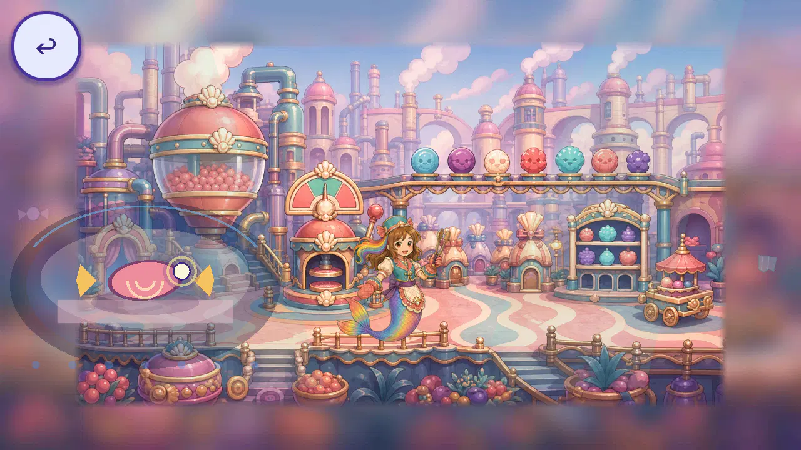
phase2_task_open · b9e1ae5a20560f13d2b3d36c14c9268655088b8f94593af7a522a5a1b86c23ba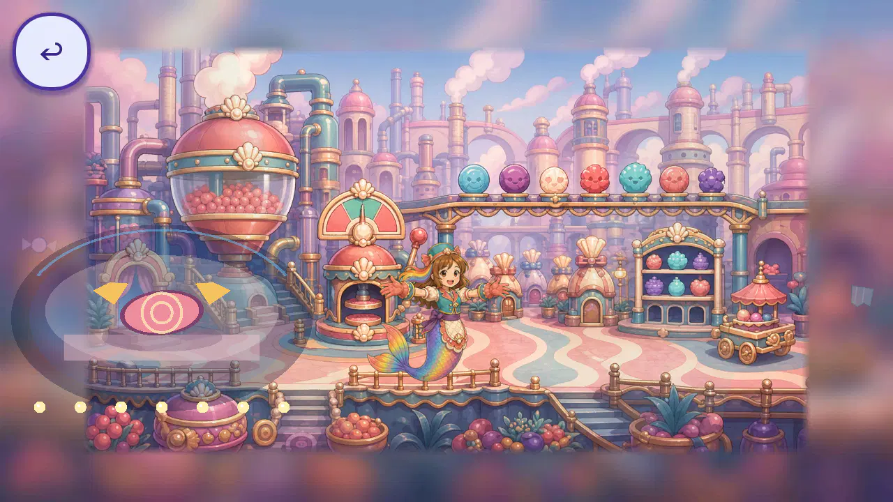
phase2_earned_completion · c2d5a741796dbb299f465279c4d1419700c47245d62f1f9a53c1c1424a88ac20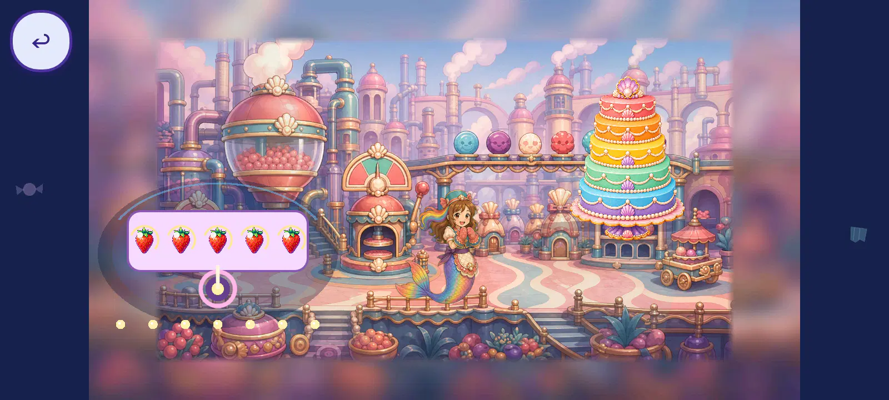
phase2_earned_completion · 040998a844b067151892690171f7fb79a09d5fa32a6b796701abdb84a404b0ba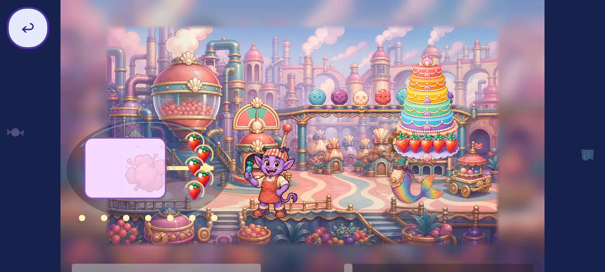
phase3_earned_completion · 20127b789f030fe84487d9bafb58b0cd130a466ddce001c4e0a6d9b237982be6Individual mounted objects and relationships
factory composition · 3.8/5
Rounded painted confectionery architecture is coherent, but dense trim competes with work and oversized UI. Refine hierarchy in actual game, conserving the source painting.
Current production drawing after exactly four station bindings and ingredient invitation reuse; actual isolated Kitchen caller, training
Exact native evidence at both sizes
phase2_task_open · b9e1ae5a20560f13d2b3d36c14c9268655088b8f94593af7a522a5a1b86c23ba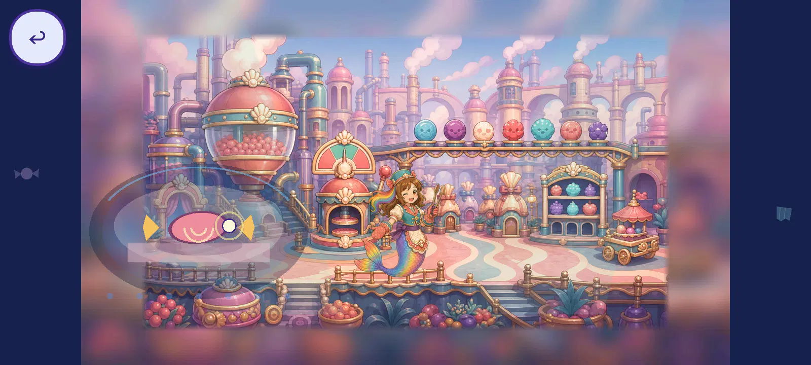
phase2_task_open · 0b7f3619db107b473c2d3bf4a1408038f82843263ccfc7020caf8cf664afd78f blurred perimeter backing · 3.1/5
Broad soft border washes the stage and looks like a blurred rectangular reproduction. Clarify explicit canvas layers and preserve crisp authored edges.
Current production drawing after exactly four station bindings and ingredient invitation reuse; actual isolated Kitchen caller, training
Exact native evidence at both sizes
phase2_task_open · b9e1ae5a20560f13d2b3d36c14c9268655088b8f94593af7a522a5a1b86c23baphase2_task_open · 0b7f3619db107b473c2d3bf4a1408038f82843263ccfc7020caf8cf664afd78f large dark activity oval · 3.0/5
Large translucent lens obscures physical stations and frames flat icons as a separate interface. Replace its weak use with a supported child-readable work composition.
Current production drawing after exactly four station bindings and ingredient invitation reuse; actual isolated Kitchen caller, training
Exact native evidence at both sizes
phase2_task_open · b9e1ae5a20560f13d2b3d36c14c9268655088b8f94593af7a522a5a1b86c23baphase2_task_open · 0b7f3619db107b473c2d3bf4a1408038f82843263ccfc7020caf8cf664afd78f progress star strip · 4.0/5
Earned feedback works, but generic glowing dots sit apart from the physical result. Retain intentional progress and make the visual change support the action.
Current production drawing after exactly four station bindings and ingredient invitation reuse; actual isolated Kitchen caller, training
Exact native evidence at both sizes
phase2_earned_completion · c2d5a741796dbb299f465279c4d1419700c47245d62f1f9a53c1c1424a88ac20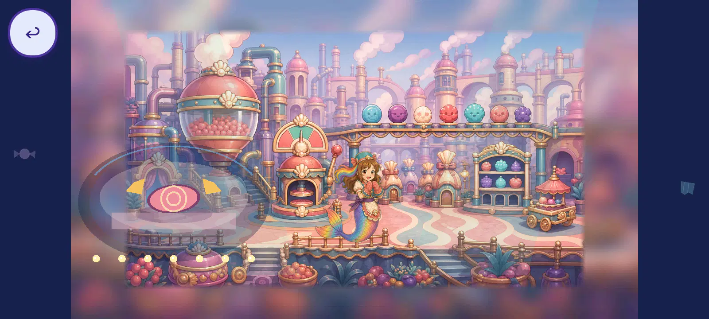
phase2_earned_completion · e52575698b60a71de474002d5eeff7116d9bad954cda6d74dcec30b9cbb5ae96 SYRUP shell-mold painting in use · 4.5/5
Complete painted shell and warm syrup preserve material at the current dock size. Static visible opinion; full pouring action and hand contact are separate.
Current production drawing after exactly four station bindings and ingredient invitation reuse; actual isolated Kitchen caller, training
Exact native evidence at both sizes
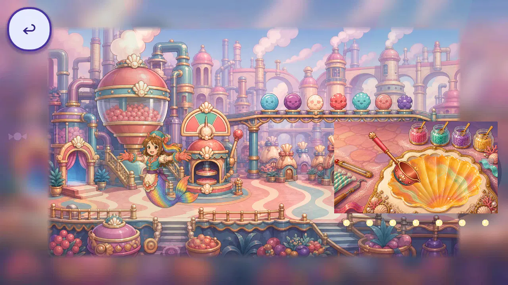
phase0_earned_completion · e926be39ad0d1f3466d427ccf30cbd8a304ff931353f5f0d165a327223be1d9f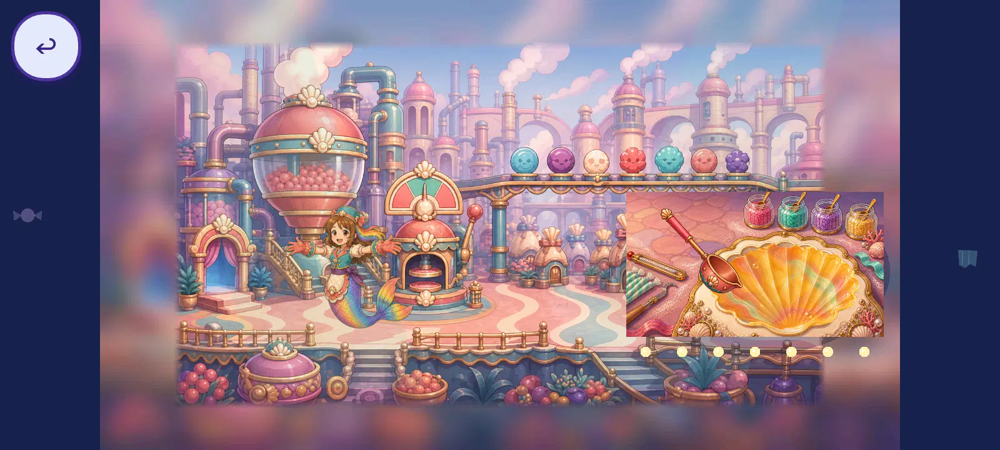
phase0_earned_completion · b5d1a47c403f69a243018065a485cc26e6cc6c75082e567392e4f7a637c90e3dSYRUP ladle painting in use · 4.5/5
Gold/red ladle belongs to the painted workstation. Roshan does not hold it in the captured panel; do not transfer this prop score to acting.
Current production drawing after exactly four station bindings and ingredient invitation reuse; actual isolated Kitchen caller, training
Exact native evidence at both sizes
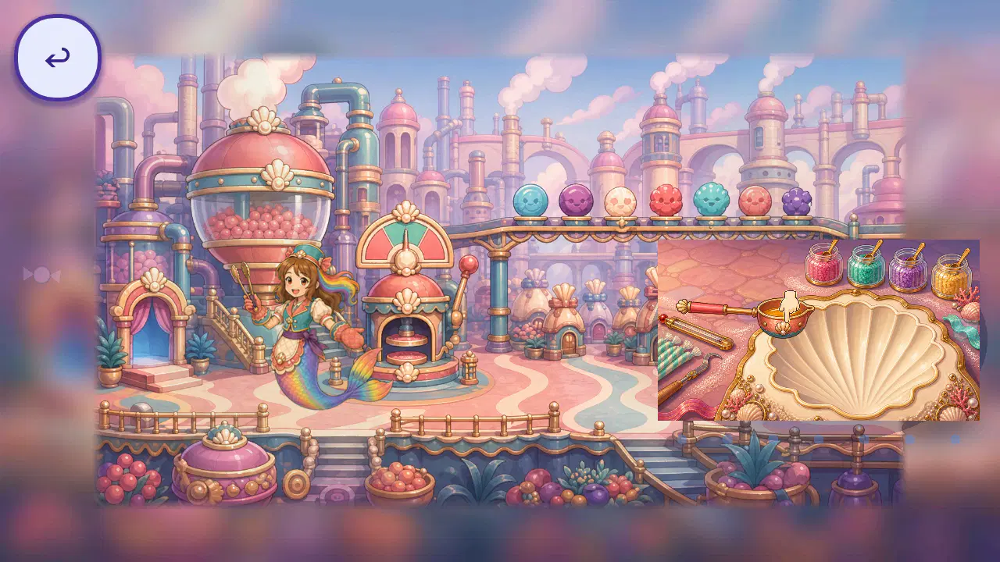
phase0_task_open · 11500a31764de1cbd0091d27b8dc6ffde0d71ac40975ee6a79cf19777659a3a7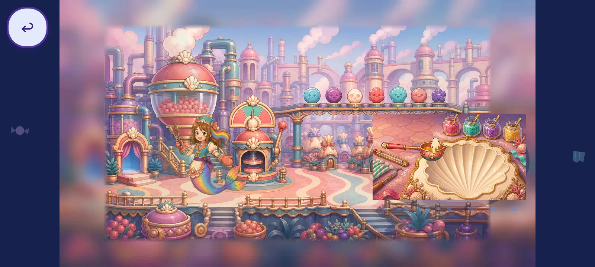
phase0_task_open · 987e4efaf95c4ca09a6c5ecf03106624aceec20725e9569f44ee69867948da7dSYRUP rectangular workstation frame · 3.8/5
The complete painted card is a hard rectangular inset over another factory. It needs scene ownership and a measured transition into useful work.
Current production drawing after exactly four station bindings and ingredient invitation reuse; actual isolated Kitchen caller, training
Exact native evidence at both sizes
phase0_task_open · 11500a31764de1cbd0091d27b8dc6ffde0d71ac40975ee6a79cf19777659a3a7phase0_task_open · 987e4efaf95c4ca09a6c5ecf03106624aceec20725e9569f44ee69867948da7d SYRUP actor-to-ladle contact · 2.7/5
Room Roshan holds a whisk away from the pictured ladle/mold. Named hand contact remains absent.
Current production drawing after exactly four station bindings and ingredient invitation reuse; actual isolated Kitchen caller, training
Exact native evidence at both sizes
phase0_task_open · 11500a31764de1cbd0091d27b8dc6ffde0d71ac40975ee6a79cf19777659a3a7phase0_task_open · 987e4efaf95c4ca09a6c5ecf03106624aceec20725e9569f44ee69867948da7d SORT coral flower bin · 3.3/5
Flat outline rectangle and coral icon function as a box, but fall below painted rounded-prop material.
Current production drawing after exactly four station bindings and ingredient invitation reuse; actual isolated Kitchen caller, training
Exact native evidence at both sizes
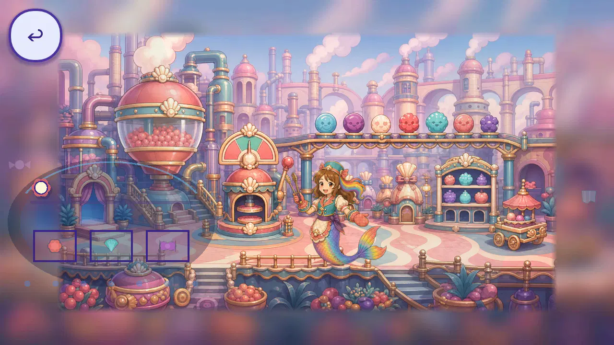
phase1_task_open · e1f26a5ab7ba63369de04d37b725792e2ffdb481a5cf7b53b113ca9df49cd943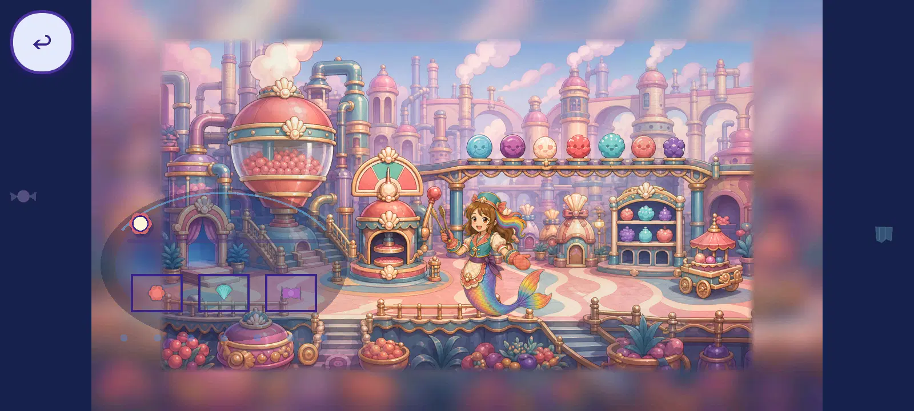
phase1_task_open · 4ce9dab3ca6c5538e88921c9fe15794a13dc9c7bcc33ab73385c721409785976SORT aqua shell bin · 3.3/5
Aqua icon is recognizable, but the container is a flat translucent rectangle. Reuse the approved shape identity and paint the actual support.
Current production drawing after exactly four station bindings and ingredient invitation reuse; actual isolated Kitchen caller, training
Exact native evidence at both sizes
phase1_task_open · e1f26a5ab7ba63369de04d37b725792e2ffdb481a5cf7b53b113ca9df49cd943phase1_task_open · 4ce9dab3ca6c5538e88921c9fe15794a13dc9c7bcc33ab73385c721409785976 SORT plum wrapped-candy bin · 3.2/5
Flat purple silhouette repeats the wrapper problem and lacks painted folds/support.
Current production drawing after exactly four station bindings and ingredient invitation reuse; actual isolated Kitchen caller, training
Exact native evidence at both sizes
phase1_task_open · e1f26a5ab7ba63369de04d37b725792e2ffdb481a5cf7b53b113ca9df49cd943phase1_task_open · 4ce9dab3ca6c5538e88921c9fe15794a13dc9c7bcc33ab73385c721409785976 SORT moving candy piece in use · 3.8/5
Silhouette is recognizable at touch size, but appears as a detached icon against the lens. Static readability does not prove physical sorting contact.
Current production drawing after exactly four station bindings and ingredient invitation reuse; actual isolated Kitchen caller, training
Exact native evidence at both sizes
phase1_task_open · e1f26a5ab7ba63369de04d37b725792e2ffdb481a5cf7b53b113ca9df49cd943phase1_task_open · 4ce9dab3ca6c5538e88921c9fe15794a13dc9c7bcc33ab73385c721409785976 SORT room-actor contact · 2.7/5
Four whisk poses do not collect or place any candy into the bins.
Current production drawing after exactly four station bindings and ingredient invitation reuse; actual isolated Kitchen caller, training
Exact native evidence at both sizes
phase1_task_open · e1f26a5ab7ba63369de04d37b725792e2ffdb481a5cf7b53b113ca9df49cd943phase1_task_open · 4ce9dab3ca6c5538e88921c9fe15794a13dc9c7bcc33ab73385c721409785976 WRAP exposed sweet · 3.4/5
Flat coral oval remains uncovered through progress. It does not visibly become the golden-paper sweet requested by the owner.
Current production drawing after exactly four station bindings and ingredient invitation reuse; actual isolated Kitchen caller, training
Exact native evidence at both sizes
phase2_earned_completion · c2d5a741796dbb299f465279c4d1419700c47245d62f1f9a53c1c1424a88ac20phase2_earned_completion · e52575698b60a71de474002d5eeff7116d9bad954cda6d74dcec30b9cbb5ae96 WRAP left end triangle · 2.8/5
Detached flat fan turns around an uncovered sweet. No attached paper neck or pinch contact.
Current production drawing after exactly four station bindings and ingredient invitation reuse; actual isolated Kitchen caller, training
Exact native evidence at both sizes
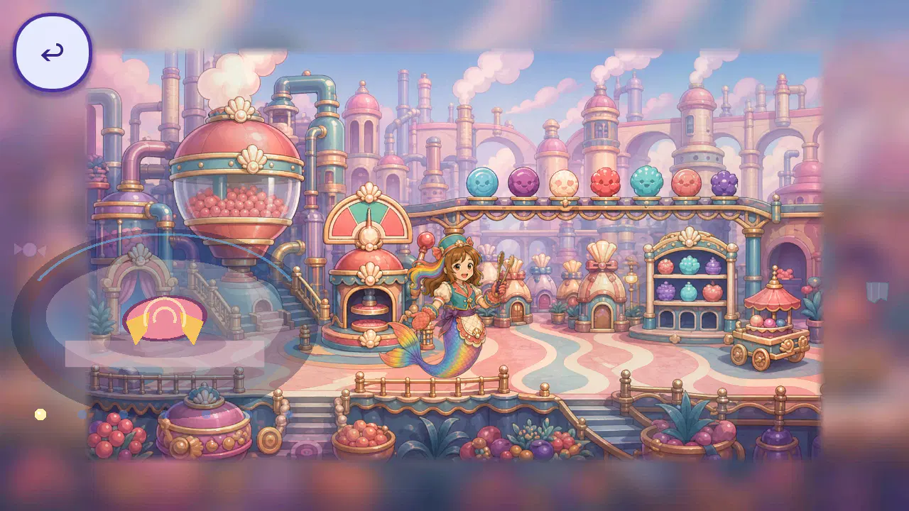
phase2_circle_step16 · 31dcccc343704ce43a77d1175a797cc6d65ce31088f5019d608daad21e050bda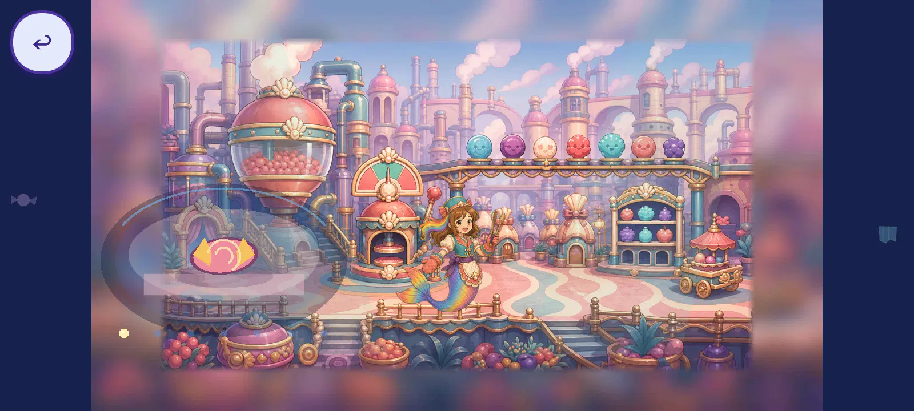
phase2_circle_step16 · 3c0105ffd7ffa694c744f00c8b71a03bbf503e8561fcb75ddeab85fcc2c8c9c8WRAP right end triangle · 2.8/5
Independent rotating triangle has no connected wrapping sheet or material folding.
Current production drawing after exactly four station bindings and ingredient invitation reuse; actual isolated Kitchen caller, training
Exact native evidence at both sizes
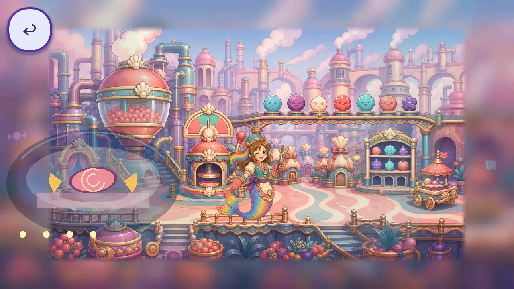
phase2_circle_step32 · 48735b42d278508e827afa45a7a97bd5ad308b0e0c275e2c690078ec6cdc2052phase2_circle_step32 · 13ae55e7f0cd2d12ade5165e94e27a37d6af4041ceb8575cc896684b34347487WRAP golden motion arcs · 3.0/5
Arcs signify motion but do not fold paper or twist attached necks. Cosmetic feedback cannot establish wrapping.
Current production drawing after exactly four station bindings and ingredient invitation reuse; actual isolated Kitchen caller, training
Exact native evidence at both sizes
phase2_earned_completion · c2d5a741796dbb299f465279c4d1419700c47245d62f1f9a53c1c1424a88ac20phase2_earned_completion · e52575698b60a71de474002d5eeff7116d9bad954cda6d74dcec30b9cbb5ae96 WRAP supporting pink rectangle · 3.2/5
Flat translucent platform has no painted table/support relationship and competes with the lens.
Current production drawing after exactly four station bindings and ingredient invitation reuse; actual isolated Kitchen caller, training
Exact native evidence at both sizes
phase2_task_open · b9e1ae5a20560f13d2b3d36c14c9268655088b8f94593af7a522a5a1b86c23baphase2_task_open · 0b7f3619db107b473c2d3bf4a1408038f82843263ccfc7020caf8cf664afd78f WRAP four work-row hand poses · 2.7/5
Each current work key holds a whisk away from the sweet. None represents edge fold, neck pinch or opposing twist.
Current production drawing after exactly four station bindings and ingredient invitation reuse; actual isolated Kitchen caller, training
Exact native evidence at both sizes
phase2_task_open · b9e1ae5a20560f13d2b3d36c14c9268655088b8f94593af7a522a5a1b86c23baphase2_task_open · 0b7f3619db107b473c2d3bf4a1408038f82843263ccfc7020caf8cf664afd78f WRAP whole action · 2.8/5
All consecutive ordinary wrapping frames inspected at both native sizes. Progress succeeds while the sweet remains uncovered; hand contact and material causality fail.
Current production drawing after exactly four station bindings and ingredient invitation reuse; actual isolated Kitchen caller, training
Exact native evidence at both sizes
phase2_earned_completion · c2d5a741796dbb299f465279c4d1419700c47245d62f1f9a53c1c1424a88ac20phase2_earned_completion · e52575698b60a71de474002d5eeff7116d9bad954cda6d74dcec30b9cbb5ae96 SHARE painted gift-bag invitation · 4.5/5
Complete painted tied gift bag is coherent and visible. Invitation opinion only; giving/receiving action is separate.
Current production drawing after exactly four station bindings and ingredient invitation reuse; actual isolated Kitchen caller, training
Exact native evidence at both sizes
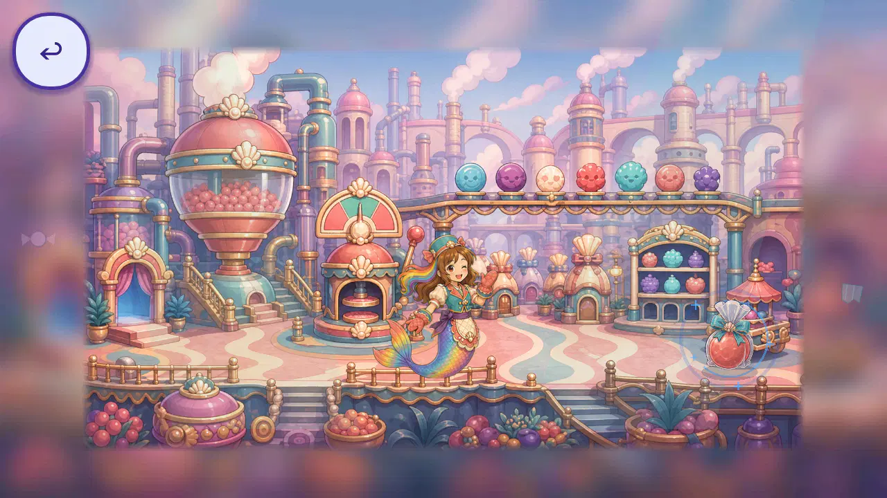
phase3_invitation · e1fab714942febdabed70faf7a2d7f3fe598410d249b77cf2478193e5649d409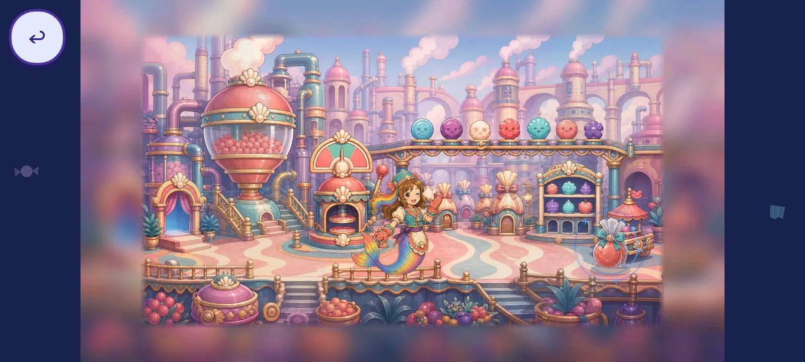
phase3_invitation · 60568eab6ba9b84daedec1c8be954893a5037e81ff30bcce08b13211365073c3SHARE coral recipient portrait in use · 3.8/5
Recipient is recognizable but appears as an icon inside the old lens instead of a receiving character.
Current production drawing after exactly four station bindings and ingredient invitation reuse; actual isolated Kitchen caller, training
Exact native evidence at both sizes
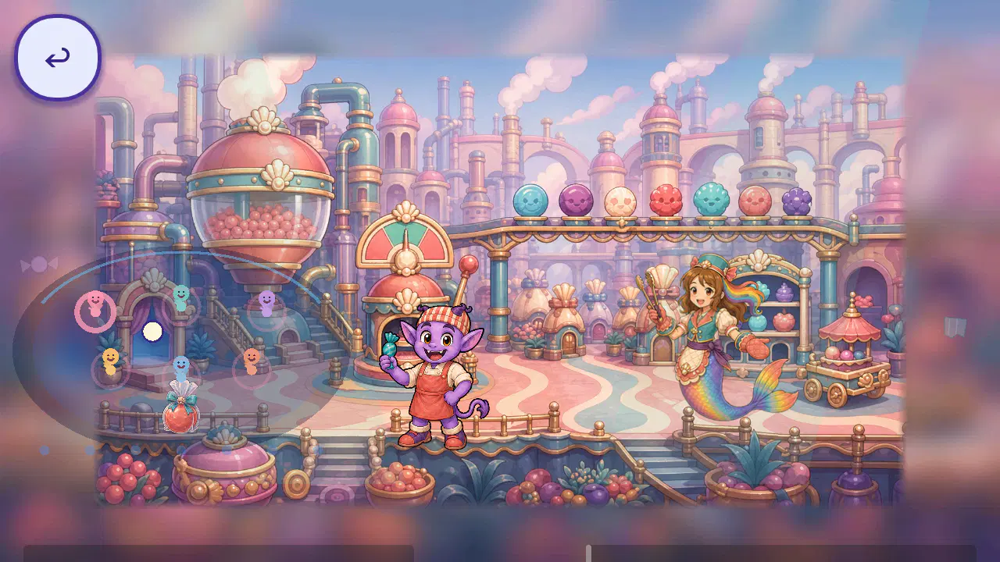
phase3_task_open · 2469332cbd7cd7fadf604b843baa441e532eeec23f58aa4a6a3da04add13d515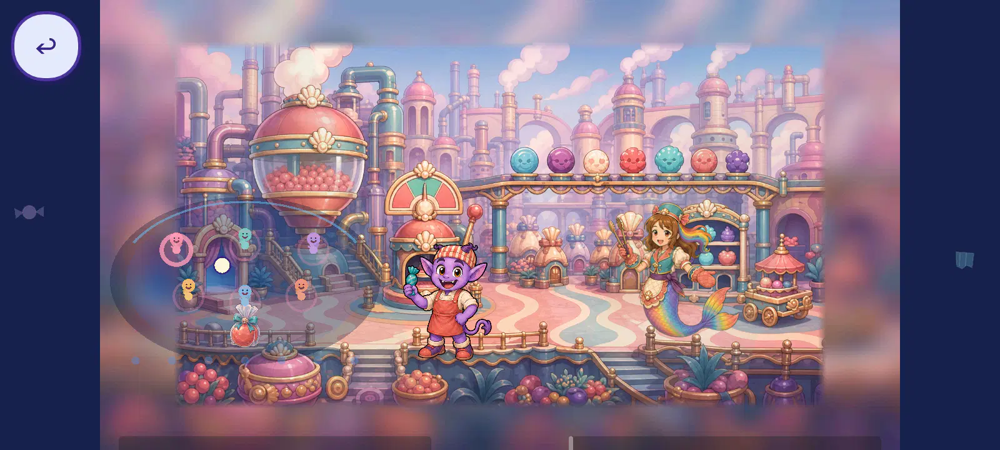
phase3_task_open · 0d1bd4d402a057832d5c54d6591173bd912cf299d281bac14386618f8380bf84SHARE aqua recipient portrait in use · 3.8/5
Icon identity survives; receiving hand/object relationship is not shown.
Current production drawing after exactly four station bindings and ingredient invitation reuse; actual isolated Kitchen caller, training
Exact native evidence at both sizes
phase3_task_open · 2469332cbd7cd7fadf604b843baa441e532eeec23f58aa4a6a3da04add13d515phase3_task_open · 0d1bd4d402a057832d5c54d6591173bd912cf299d281bac14386618f8380bf84 SHARE plum recipient portrait in use · 3.8/5
Readable color identity, but remote tapping cannot demonstrate giving a wrapped sweet.
Current production drawing after exactly four station bindings and ingredient invitation reuse; actual isolated Kitchen caller, training
Exact native evidence at both sizes
phase3_task_open · 2469332cbd7cd7fadf604b843baa441e532eeec23f58aa4a6a3da04add13d515phase3_task_open · 0d1bd4d402a057832d5c54d6591173bd912cf299d281bac14386618f8380bf84 SHARE rival/actor relationship · 3.6/5
Large rival and remote Roshan compete with the small gifts and recipient symbols. Current composition is below the floor.
Current production drawing after exactly four station bindings and ingredient invitation reuse; actual isolated Kitchen caller, training
Exact native evidence at both sizes
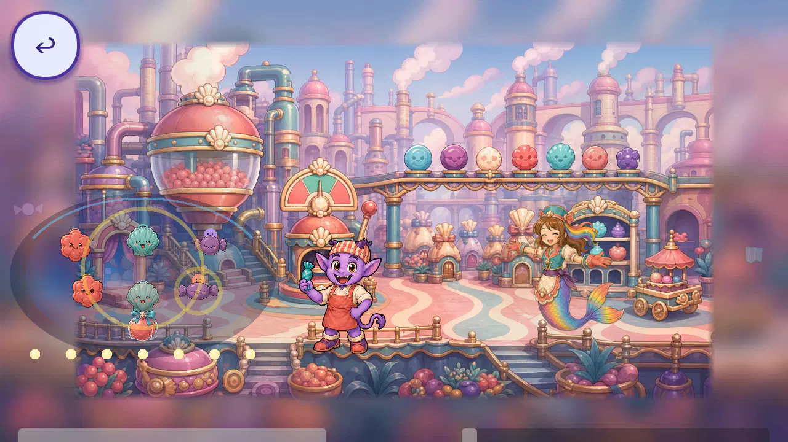
phase3_earned_completion · 0d05590dc0494835687acb785c9e5702ddd9fe07382ea134256337b0029193a7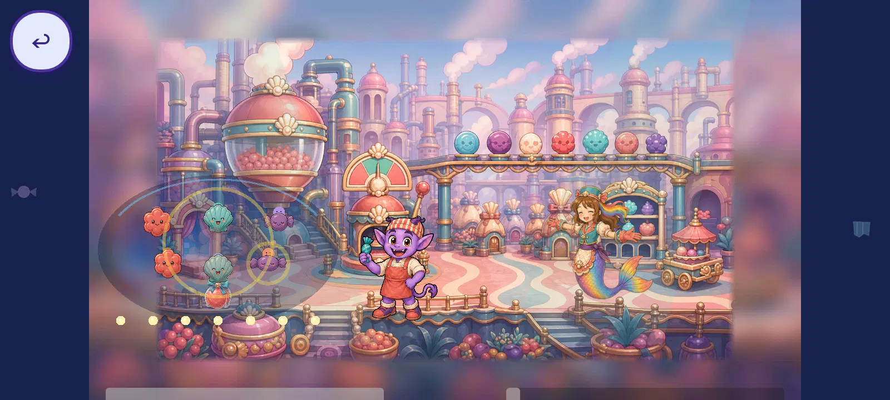
phase3_earned_completion · 50fb548ac2e6d8910408176cd620a18959baa39bb960ab47104a9a1f34647e9cnormal Kitchen return composition · 4.0/5
Actual earned callback restores the room and saved star. Large reading caption is supplemental; phone/child and full route acceptance remain separate.
Current production drawing after exactly four station bindings and ingredient invitation reuse; actual isolated Kitchen caller, training
Exact native evidence at both sizes
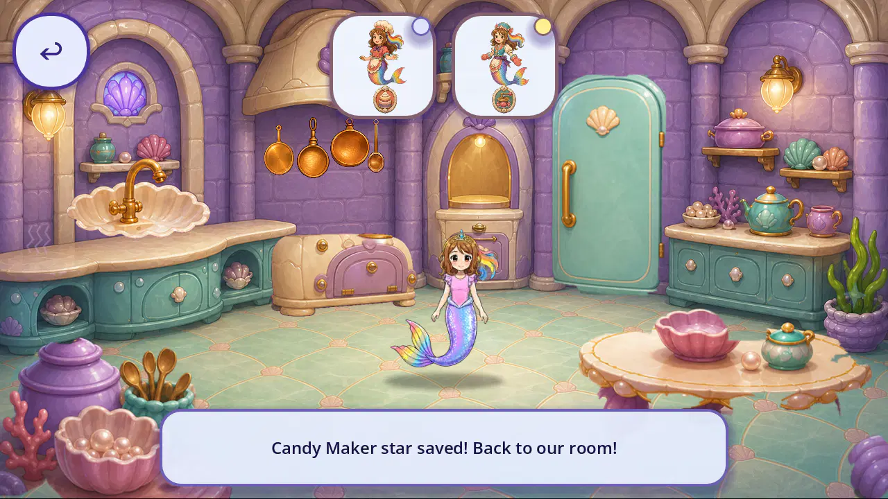
actual_earned_kitchen_return · a3412fa044571b9a8dc1107ef5ac11653174e9263eec0b85584f5801e596585a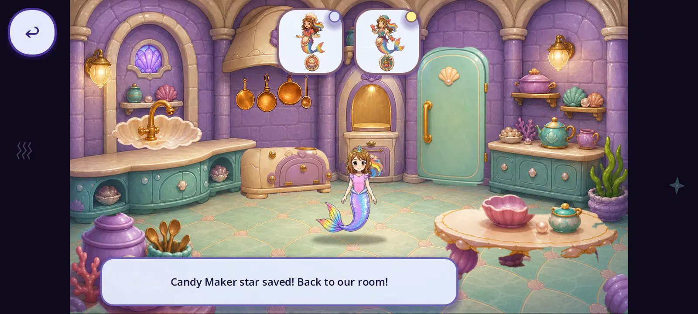
actual_earned_kitchen_return · 99446f2a4b424c24b55b0a5e44ea13d2940c2ee13feafe82f2dab7c1f6d3740bCOAT physical invitation binding · 4.5/5
Scoped route repair now arms the intended existing station and opens the task through real input. This score is selected invitation fit, not art/action closure.
Current production drawing after exactly four station bindings and ingredient invitation reuse; actual isolated Kitchen caller, story
Exact native evidence at both sizes
phase0_invitation · 229b7df12c6a1adbe678c1b4a1414afc5ce2b77ed66ca1463e6e2d6d83701663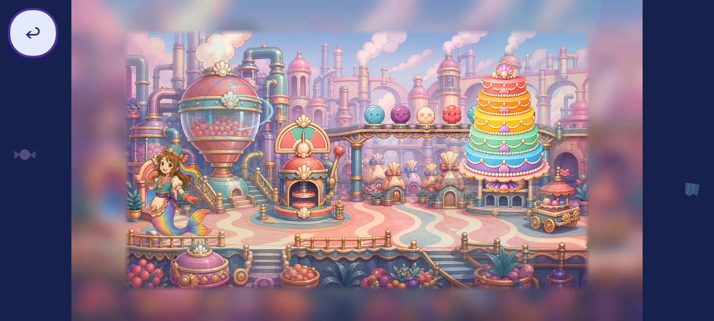
phase0_invitation · b3d9a90e9ea200906308b45032e039d2ce6d2c0e915879340119fbefbdfd23ca COAT cream flat tray · 3.0/5
Flat rounded rectangle has no painted rim/depth or useful hand support.
Current production drawing after exactly four station bindings and ingredient invitation reuse; actual isolated Kitchen caller, story
Exact native evidence at both sizes
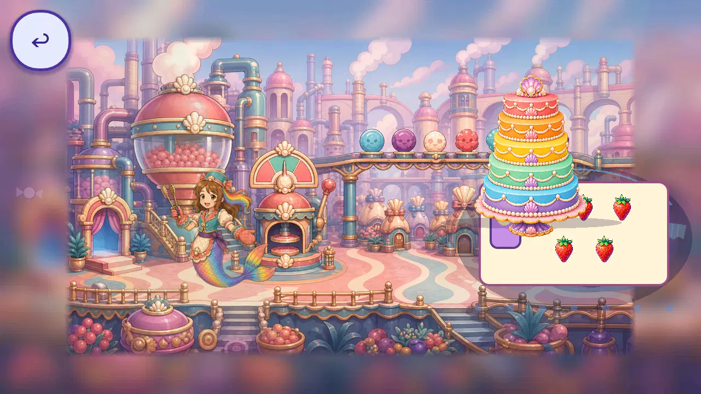
phase0_task_open · a51ae389fa5f18310f9df827f2b047f7020109dcb8570a9de014f181f3efb4b3phase0_task_open · 0347f8cc5e5a1ddd58f5d7aa50857d6b3b8c3d8e1aa8b7316021d77e4d21f2e4COAT purple pitcher silhouette · 2.8/5
Flat jug is partly covered by the persistent cake; it is weaker than the existing painted pitcher source.
Current production drawing after exactly four station bindings and ingredient invitation reuse; actual isolated Kitchen caller, story
Exact native evidence at both sizes
phase0_task_open · a51ae389fa5f18310f9df827f2b047f7020109dcb8570a9de014f181f3efb4b3phase0_task_open · 0347f8cc5e5a1ddd58f5d7aa50857d6b3b8c3d8e1aa8b7316021d77e4d21f2e4 COAT five berries in use · 3.8/5
Painted berry identities are reused, but crowding/overlap with the cake obscures one side of the work.
Current production drawing after exactly four station bindings and ingredient invitation reuse; actual isolated Kitchen caller, story
Exact native evidence at both sizes
phase0_task_open · a51ae389fa5f18310f9df827f2b047f7020109dcb8570a9de014f181f3efb4b3phase0_task_open · 0347f8cc5e5a1ddd58f5d7aa50857d6b3b8c3d8e1aa8b7316021d77e4d21f2e4 COAT cake overlap with work · 2.5/5
Large persistent cake covers the activity area before the berries are worked. Preserve cake identity while fixing mounted ownership/scale.
Current production drawing after exactly four station bindings and ingredient invitation reuse; actual isolated Kitchen caller, story
Exact native evidence at both sizes
phase0_task_open · a51ae389fa5f18310f9df827f2b047f7020109dcb8570a9de014f181f3efb4b3phase0_task_open · 0347f8cc5e5a1ddd58f5d7aa50857d6b3b8c3d8e1aa8b7316021d77e4d21f2e4 SORT STRAWBERRIES coral bin · 3.0/5
Flat story bin sits below a berry row that crosses its upper edge. No painted support/contact.
Current production drawing after exactly four station bindings and ingredient invitation reuse; actual isolated Kitchen caller, story
Exact native evidence at both sizes
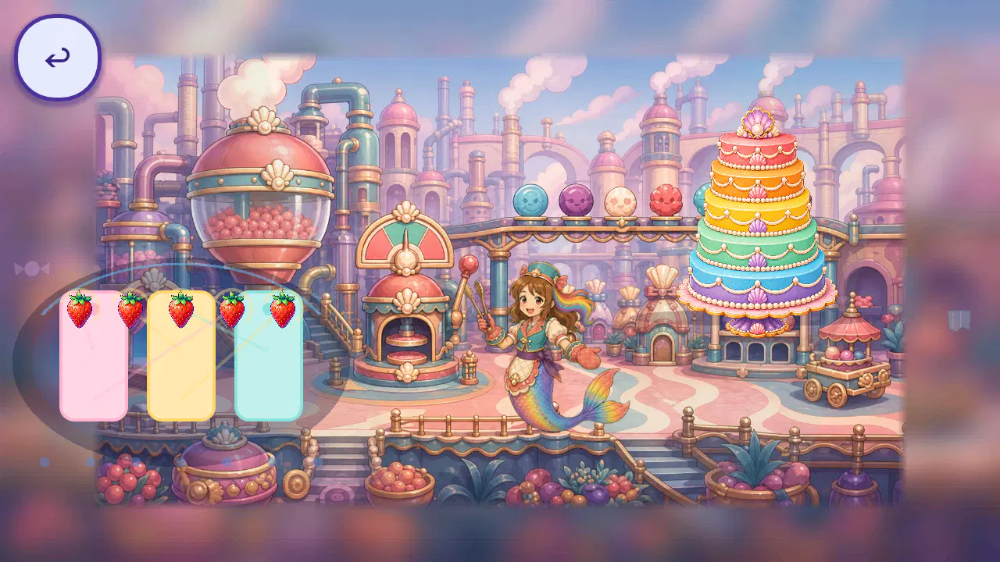
phase1_task_open · 9bb59a6c0f15139419f98f05c69300513c5360d6a099eba58400691addc14ba6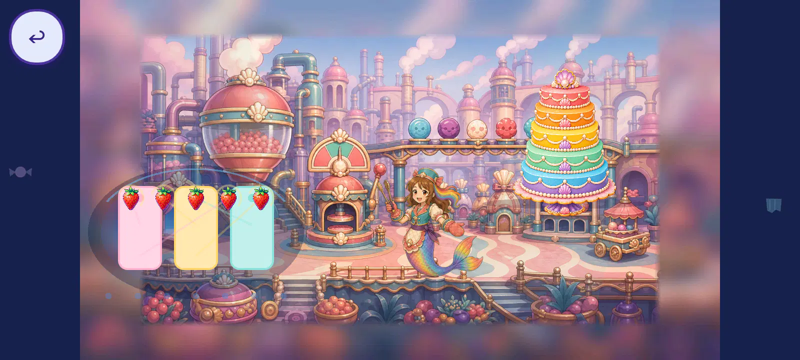
phase1_task_open · 2af99135cbce18a76a3de432b625cdfab0571b47fdabb9a9e4006bfa82286f86SORT STRAWBERRIES gold bin · 3.0/5
Color target is recognizable but remains a flat rectangle with unsupported berries.
Current production drawing after exactly four station bindings and ingredient invitation reuse; actual isolated Kitchen caller, story
Exact native evidence at both sizes
phase1_task_open · 9bb59a6c0f15139419f98f05c69300513c5360d6a099eba58400691addc14ba6phase1_task_open · 2af99135cbce18a76a3de432b625cdfab0571b47fdabb9a9e4006bfa82286f86 SORT STRAWBERRIES aqua bin · 3.0/5
Aqua target lacks painted volume and physical berry placement.
Current production drawing after exactly four station bindings and ingredient invitation reuse; actual isolated Kitchen caller, story
Exact native evidence at both sizes
phase1_task_open · 9bb59a6c0f15139419f98f05c69300513c5360d6a099eba58400691addc14ba6phase1_task_open · 2af99135cbce18a76a3de432b625cdfab0571b47fdabb9a9e4006bfa82286f86 SORT STRAWBERRIES five-berry layout · 3.4/5
Five visible berries straddle the bin tops while inherited sorting earns six placements. Visible item sequencing needs its own truthful review.
Current production drawing after exactly four station bindings and ingredient invitation reuse; actual isolated Kitchen caller, story
Exact native evidence at both sizes
phase1_task_open · 9bb59a6c0f15139419f98f05c69300513c5360d6a099eba58400691addc14ba6phase1_task_open · 2af99135cbce18a76a3de432b625cdfab0571b47fdabb9a9e4006bfa82286f86 GLAZE five berry paintings in use · 4.0/5
Five consistent red source berries remain recognizable. Their mounted flat tray and unchanged surface do not communicate glaze.
Current production drawing after exactly four station bindings and ingredient invitation reuse; actual isolated Kitchen caller, story
Exact native evidence at both sizes
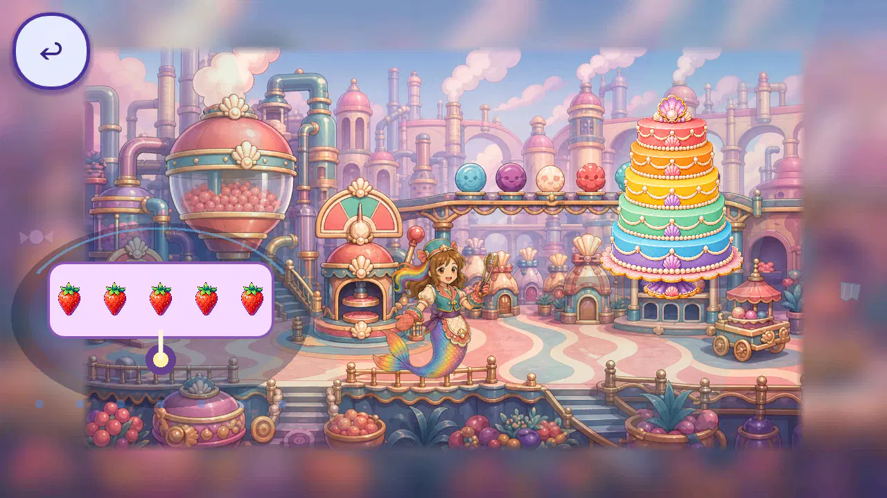
phase2_task_open · 0f44b120be1e49ce74808ac06c40a9c7866cf79e33c23be69ffe48ae8e3ae13a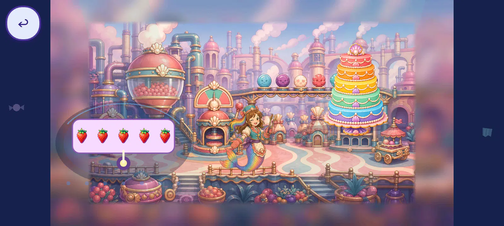
phase2_task_open · 198d9aba8618e34f4154329889d6ea026f042de0ccd7112df989cb3a15c34a3fGLAZE flat pink tray · 3.1/5
Unpainted rectangle under the berries fails the painted support language.
Current production drawing after exactly four station bindings and ingredient invitation reuse; actual isolated Kitchen caller, story
Exact native evidence at both sizes
phase2_task_open · 0f44b120be1e49ce74808ac06c40a9c7866cf79e33c23be69ffe48ae8e3ae13aphase2_task_open · 198d9aba8618e34f4154329889d6ea026f042de0ccd7112df989cb3a15c34a3f GLAZE gold shaft/control · 2.8/5
Generic shaft and circular control do not represent a nozzle/brush/pour contacting berries.
Current production drawing after exactly four station bindings and ingredient invitation reuse; actual isolated Kitchen caller, story
Exact native evidence at both sizes
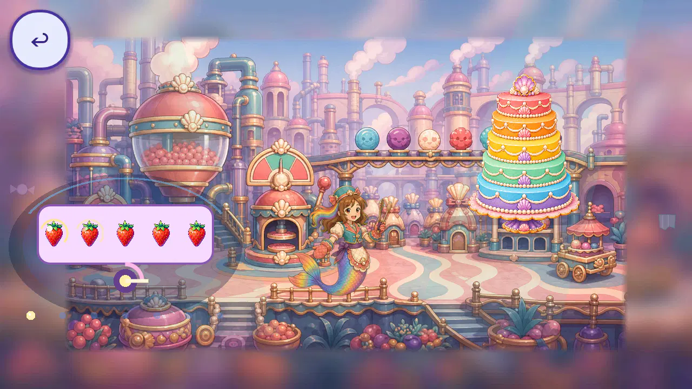
phase2_circle_step16 · 05738f5c2b6a45e13bc54413ef897fc6b00b654b6d77b51accc1cd5c7f58f03ephase2_circle_step16 · 59b9deb3245ec1175e348556add90100cf92ebf253a4bfb677bc959be071709eGLAZE golden arcs · 2.7/5
Gold feedback brightens as progress advances; no visible physical glazing contact or material change.
Current production drawing after exactly four station bindings and ingredient invitation reuse; actual isolated Kitchen caller, story
Exact native evidence at both sizes
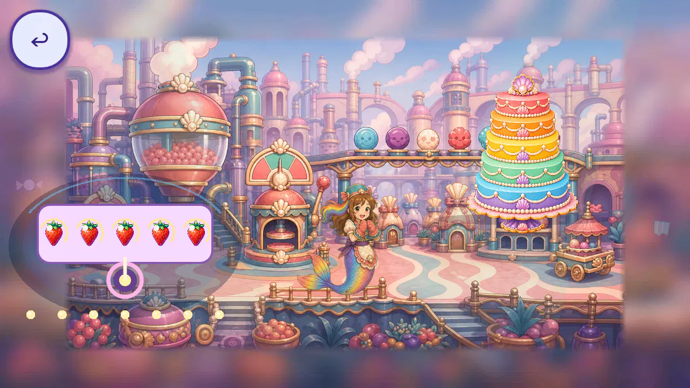
phase2_earned_completion · 495dac9b7ff8322e711188b7ba428818ca3a1585889fe45b8bc6271e1d712583phase2_earned_completion · 040998a844b067151892690171f7fb79a09d5fa32a6b796701abdb84a404b0baGLAZE hand contact · 2.7/5
Room Roshan keeps the remote whisk. New candy-wrapper hands must never be bound to this different birthday task.
Current production drawing after exactly four station bindings and ingredient invitation reuse; actual isolated Kitchen caller, story
Exact native evidence at both sizes
phase2_task_open · 0f44b120be1e49ce74808ac06c40a9c7866cf79e33c23be69ffe48ae8e3ae13aphase2_task_open · 198d9aba8618e34f4154329889d6ea026f042de0ccd7112df989cb3a15c34a3f GLAZE cake result semantics · 2.2/5
At cake mask0x3F the game already shows five berries on the violet base. Binding cake protocol requires cake unchanged and glazed berries on their separate tray.
Current production drawing after exactly four station bindings and ingredient invitation reuse; actual isolated Kitchen caller, story
Exact native evidence at both sizes
phase2_earned_completion · 495dac9b7ff8322e711188b7ba428818ca3a1585889fe45b8bc6271e1d712583phase2_earned_completion · 040998a844b067151892690171f7fb79a09d5fa32a6b796701abdb84a404b0ba GLAZE whole action · 2.6/5
Complete consecutive action inspected at both sizes. Earned progress and stable berry count do not repair missing glaze contact or premature wrong-tier result.
Current production drawing after exactly four station bindings and ingredient invitation reuse; actual isolated Kitchen caller, story
Exact native evidence at both sizes
phase2_earned_completion · 495dac9b7ff8322e711188b7ba428818ca3a1585889fe45b8bc6271e1d712583phase2_earned_completion · 040998a844b067151892690171f7fb79a09d5fa32a6b796701abdb84a404b0ba PLACE moving-berry column · 2.5/5
Task berries move into a vertical column at the right edge instead of visibly settling one per upper tier.
Current production drawing after exactly four station bindings and ingredient invitation reuse; actual isolated Kitchen caller, story
Exact native evidence at both sizes
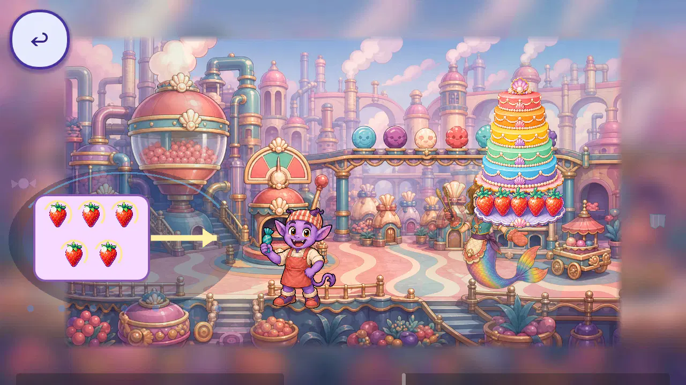
phase3_task_open · 4a9fa9ff8cf395f6319f0f3034a22796df70525a06692cf129744c35cf42e984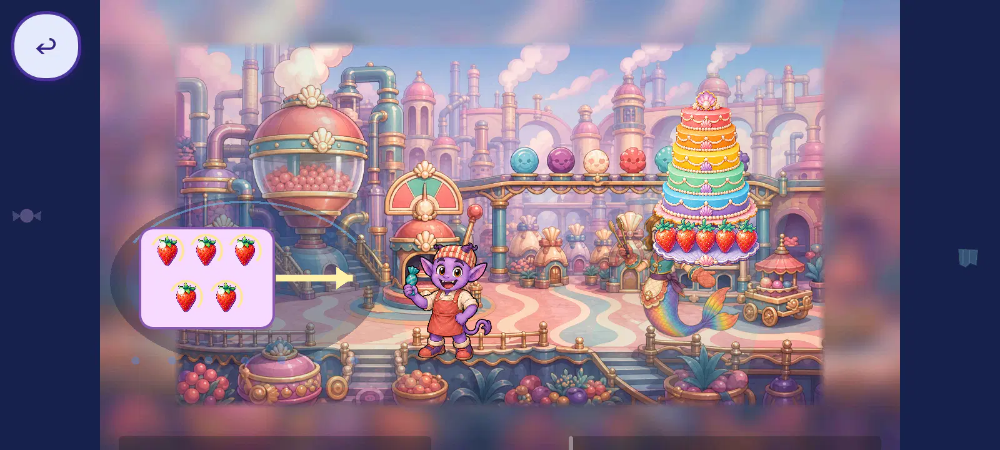
phase3_task_open · f96daa1eda95f63f72ecce08dd5449278e05b15c1f4543dace8bcf42b686e3bdPLACE visible berry accounting · 2.0/5
Five task berries remain visible together with five painted base berries. Ten visible berries contradict the required five-object assembly.
Current production drawing after exactly four station bindings and ingredient invitation reuse; actual isolated Kitchen caller, story
Exact native evidence at both sizes
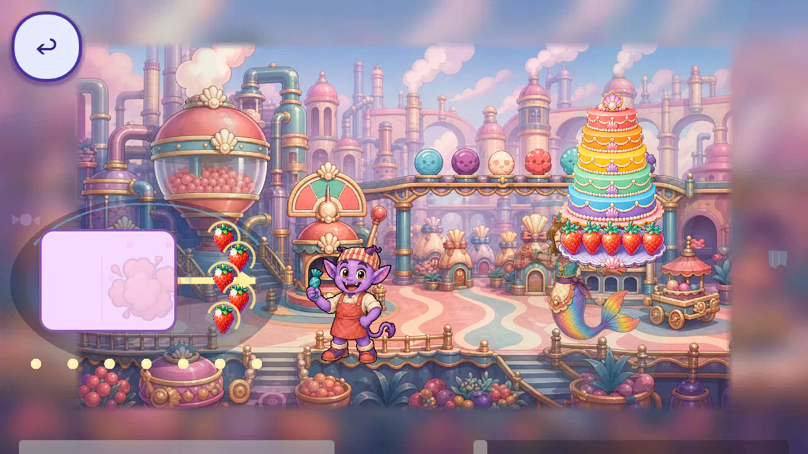
phase3_earned_completion · b7c5419f4622c571a8348387f7a1bc1b6b51981fe70d205da08d6365aa3d48cbphase3_earned_completion · 20127b789f030fe84487d9bafb58b0cd130a466ddce001c4e0a6d9b237982be6final cake upper-tier placement · 2.0/5
Cake mask0x7F still shows five berries along violet base and none on the five upper tiers. Canon requires one per upper tier, none on violet base.
Current production drawing after exactly four station bindings and ingredient invitation reuse; actual isolated Kitchen caller, story
Exact native evidence at both sizes
phase3_earned_completion · b7c5419f4622c571a8348387f7a1bc1b6b51981fe70d205da08d6365aa3d48cbphase3_earned_completion · 20127b789f030fe84487d9bafb58b0cd130a466ddce001c4e0a6d9b237982be6 final cake/Roshan occlusion · 2.6/5
Large cake covers Roshan head/body in the actual1600 finale. Source beauty does not pass mounted hierarchy.
Current production drawing after exactly four station bindings and ingredient invitation reuse; actual isolated Kitchen caller, story
Exact native evidence at both sizes
phase3_earned_completion · b7c5419f4622c571a8348387f7a1bc1b6b51981fe70d205da08d6365aa3d48cbphase3_earned_completion · 20127b789f030fe84487d9bafb58b0cd130a466ddce001c4e0a6d9b237982be6 birthday finale rival relationship · 3.3/5
Imp spectacle competes with the birthday-preparation result. Actual intent and object accounting need to remain primary.
Current production drawing after exactly four station bindings and ingredient invitation reuse; actual isolated Kitchen caller, story
Exact native evidence at both sizes
phase3_earned_completion · b7c5419f4622c571a8348387f7a1bc1b6b51981fe70d205da08d6365aa3d48cbphase3_earned_completion · 20127b789f030fe84487d9bafb58b0cd130a466ddce001c4e0a6d9b237982be6 birthday Kitchen return composition · 4.0/5
Ordinary callback returns with cake127 and party bit8 earned. Correct save/return does not accept the preceding visual construction.
Current production drawing after exactly four station bindings and ingredient invitation reuse; actual isolated Kitchen caller, story
Exact native evidence at both sizes
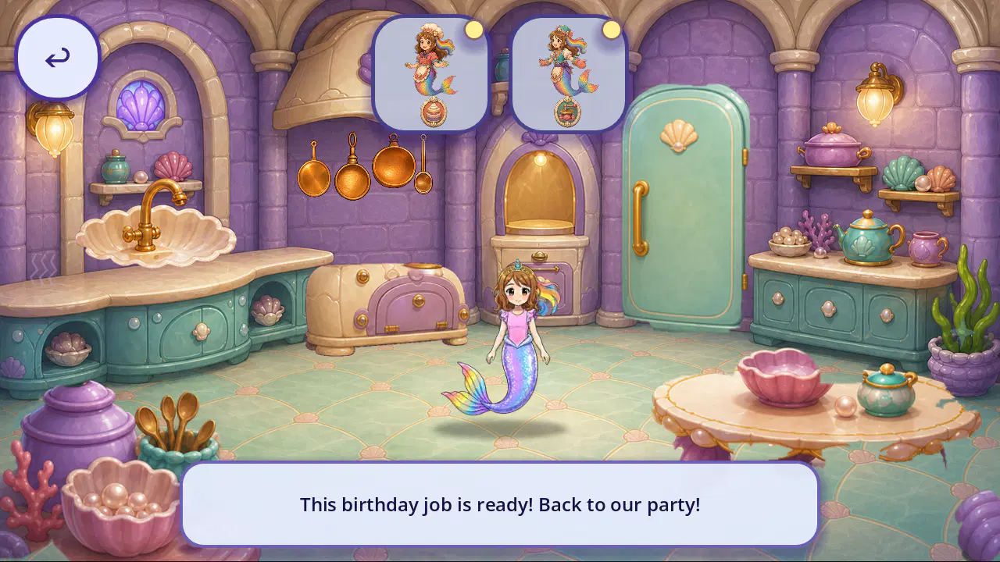
actual_earned_kitchen_return · 5fecb00f0aca507644480f5fca42ef69d4b336222b16857a385681693b3bd651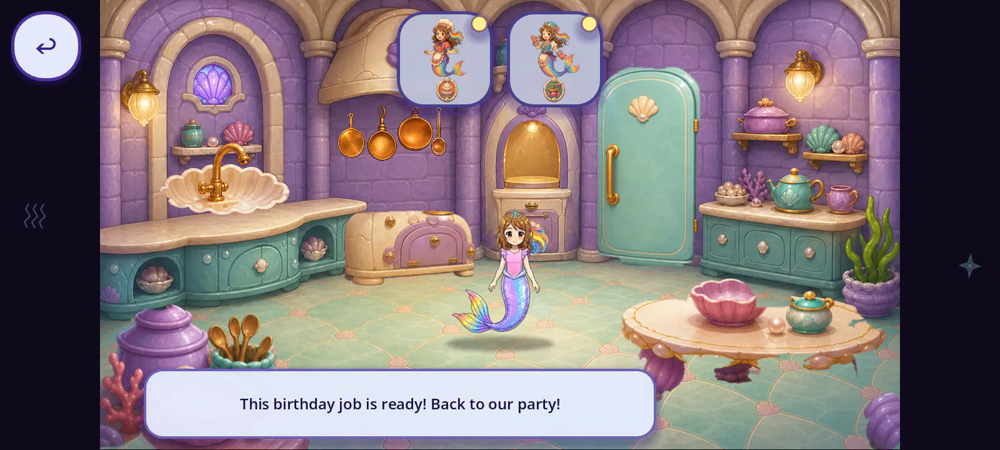
actual_earned_kitchen_return · e36681ce79cd359d8d685b37180bb1d961918cb3a39f9ea6d66eab021b3cde49All current selected canvases
('training', 1280) · all 16 native selected views
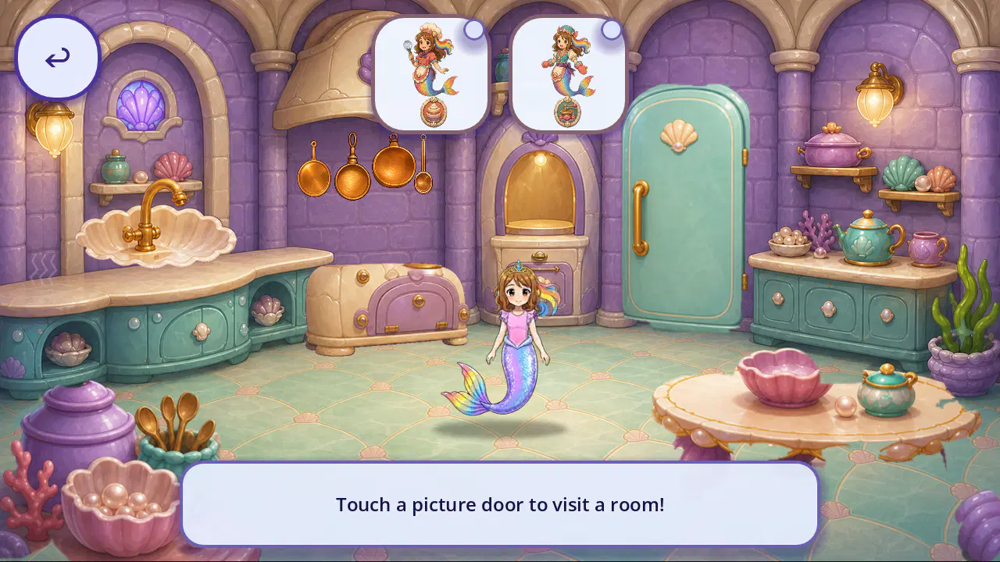
actual_kitchen_card · 927f9813537adf70c67c560846779acf51ab2383f04e498b19dcf2e095a94875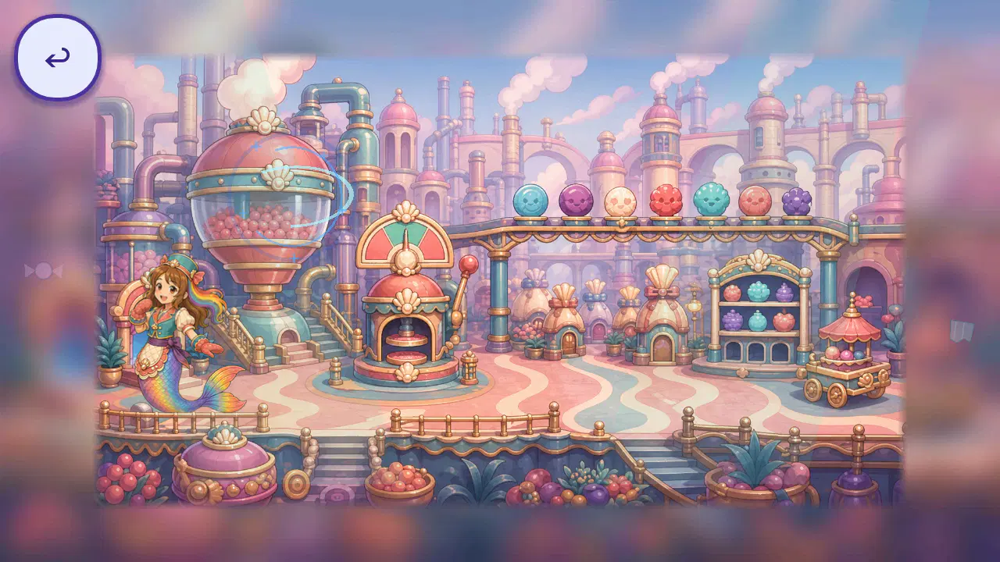
phase0_invitation · 438b0ea49a08b8e1e104c0fa3256f2695f4c96cf2764a92843e6d1b251f09a7bphase0_task_open · 11500a31764de1cbd0091d27b8dc6ffde0d71ac40975ee6a79cf19777659a3a7phase0_earned_completion · e926be39ad0d1f3466d427ccf30cbd8a304ff931353f5f0d165a327223be1d9f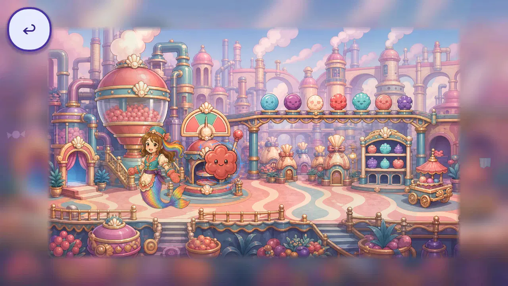
phase1_invitation · 4d0f9f82f007b9602003d8af92515ed79e5b0766b16df9166b702f36dc0aca8cphase1_task_open · e1f26a5ab7ba63369de04d37b725792e2ffdb481a5cf7b53b113ca9df49cd943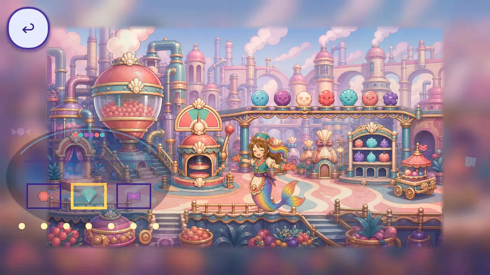
phase1_earned_completion · 5beea7e542410005340eb2755bc61aa67e387e3b70bd22f68c02a83b7e0118ce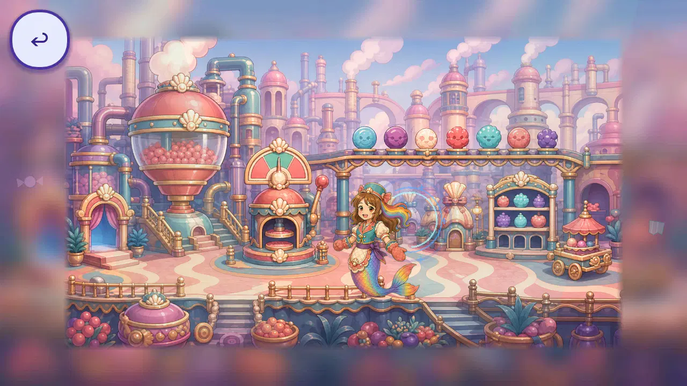
phase2_invitation · 19c7cd63b7982bf687bb0da1d0c3068684836345bb7e4f917e7ac9e64ce76356phase2_task_open · b9e1ae5a20560f13d2b3d36c14c9268655088b8f94593af7a522a5a1b86c23baphase2_circle_step16 · 31dcccc343704ce43a77d1175a797cc6d65ce31088f5019d608daad21e050bdaphase2_circle_step32 · 48735b42d278508e827afa45a7a97bd5ad308b0e0c275e2c690078ec6cdc2052phase2_earned_completion · c2d5a741796dbb299f465279c4d1419700c47245d62f1f9a53c1c1424a88ac20phase3_invitation · e1fab714942febdabed70faf7a2d7f3fe598410d249b77cf2478193e5649d409phase3_task_open · 2469332cbd7cd7fadf604b843baa441e532eeec23f58aa4a6a3da04add13d515phase3_earned_completion · 0d05590dc0494835687acb785c9e5702ddd9fe07382ea134256337b0029193a7actual_earned_kitchen_return · a3412fa044571b9a8dc1107ef5ac11653174e9263eec0b85584f5801e596585a('training', 1600) · all 16 native selected views
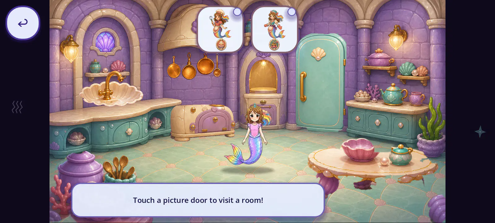
actual_kitchen_card · a322f11929dd94b2b5dc9edf724348f0da5bce3718b00386a5be11593b0aff82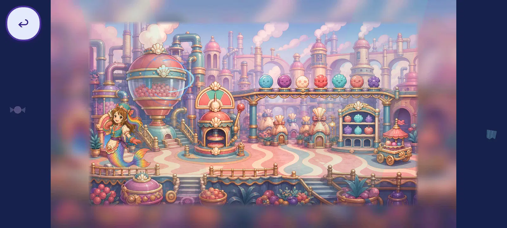
phase0_invitation · a7c802072e92974a936b851651af3a2263437708cfbd84151cbaf23fdf610d0aphase0_task_open · 987e4efaf95c4ca09a6c5ecf03106624aceec20725e9569f44ee69867948da7dphase0_earned_completion · b5d1a47c403f69a243018065a485cc26e6cc6c75082e567392e4f7a637c90e3d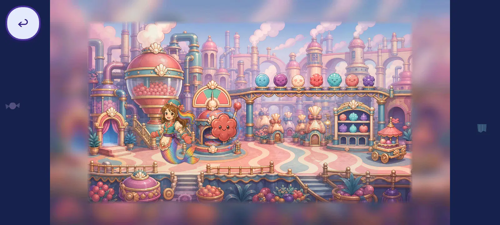
phase1_invitation · 3958a960d61c7851c494a487f56c2e844200ef0b0081d599f2cc42a63488199fphase1_task_open · 4ce9dab3ca6c5538e88921c9fe15794a13dc9c7bcc33ab73385c721409785976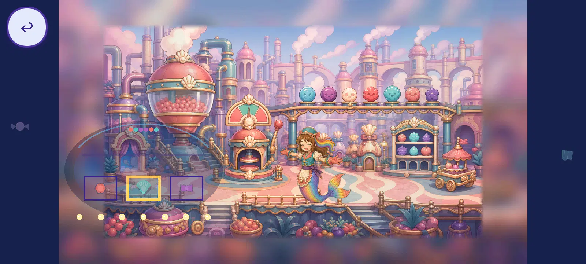
phase1_earned_completion · 409375480506813f712e703c3f3d82b55a7f4069d0a075b619d5a6c868692a47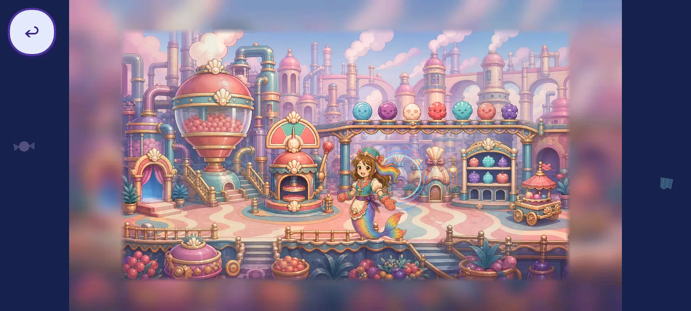
phase2_invitation · 46ee0c54bd696d2cc7807227828769bbd4c7162f05863acb5da7b8325bf8ccbbphase2_task_open · 0b7f3619db107b473c2d3bf4a1408038f82843263ccfc7020caf8cf664afd78fphase2_circle_step16 · 3c0105ffd7ffa694c744f00c8b71a03bbf503e8561fcb75ddeab85fcc2c8c9c8phase2_circle_step32 · 13ae55e7f0cd2d12ade5165e94e27a37d6af4041ceb8575cc896684b34347487phase2_earned_completion · e52575698b60a71de474002d5eeff7116d9bad954cda6d74dcec30b9cbb5ae96phase3_invitation · 60568eab6ba9b84daedec1c8be954893a5037e81ff30bcce08b13211365073c3phase3_task_open · 0d1bd4d402a057832d5c54d6591173bd912cf299d281bac14386618f8380bf84phase3_earned_completion · 50fb548ac2e6d8910408176cd620a18959baa39bb960ab47104a9a1f34647e9cactual_earned_kitchen_return · 99446f2a4b424c24b55b0a5e44ea13d2940c2ee13feafe82f2dab7c1f6d3740b('story', 1280) · all 16 native selected views
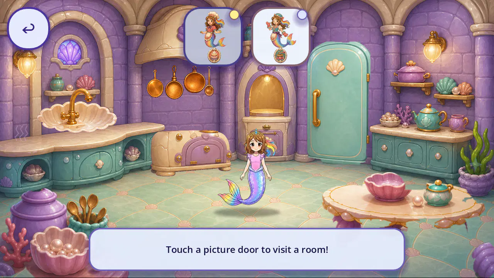
actual_kitchen_card · 3ba86e525655b5fe28a073b3cc7bc619cf210a6359eb5421c2a65b2ba7fee5fcphase0_invitation · 229b7df12c6a1adbe678c1b4a1414afc5ce2b77ed66ca1463e6e2d6d83701663phase0_task_open · a51ae389fa5f18310f9df827f2b047f7020109dcb8570a9de014f181f3efb4b3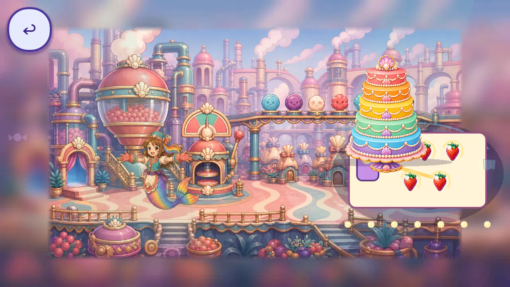
phase0_earned_completion · 3088763b0f7b15d4311a8c00c57877d8167a03b6d298f0ab410339b7cbcfcfa3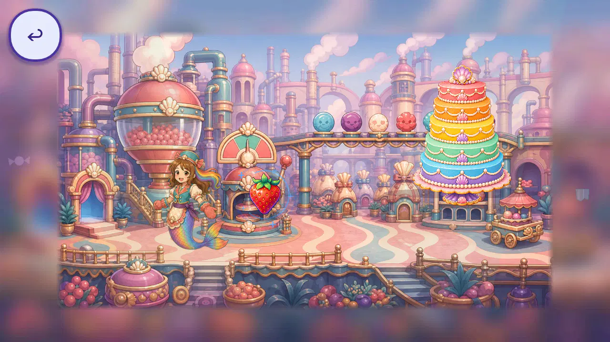
phase1_invitation · d463adebdd3b1f51f9967ff08b12bafa841bf14005b075ba5d3f19fb27aaa92cphase1_task_open · 9bb59a6c0f15139419f98f05c69300513c5360d6a099eba58400691addc14ba6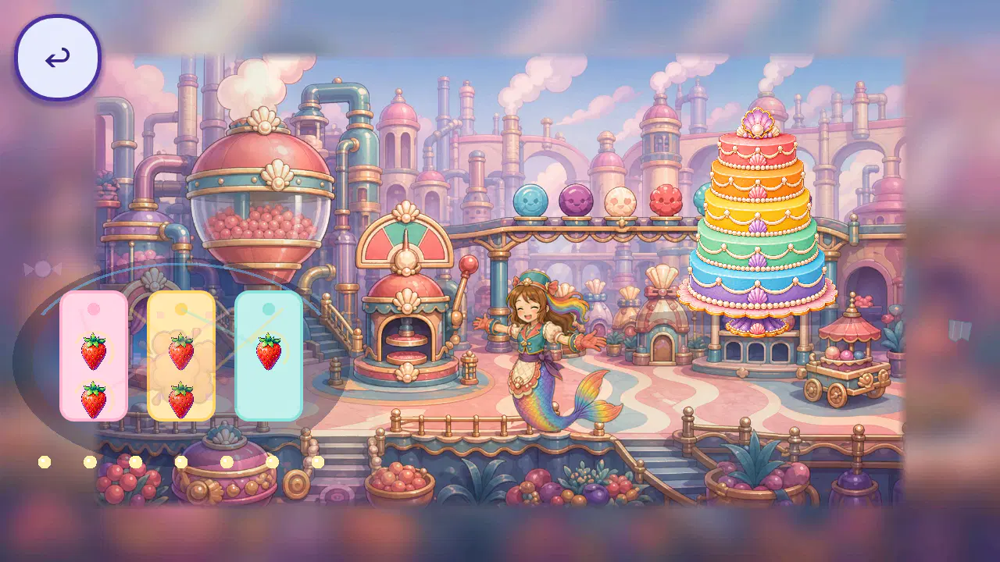
phase1_earned_completion · 606a90df2069e4fae5b2ef23070284afe032dc1fee83f8b262803ea336fbb398phase2_invitation · 9d0e48f18aef9d57e3d193b3fcd975ab271da09c69cdb0f330d27480d863ddacphase2_task_open · 0f44b120be1e49ce74808ac06c40a9c7866cf79e33c23be69ffe48ae8e3ae13aphase2_circle_step16 · 05738f5c2b6a45e13bc54413ef897fc6b00b654b6d77b51accc1cd5c7f58f03ephase2_circle_step32 · c2c5dbefc580a1fad9f451b34831cb2f3c8b80dd3f851805d59a94a525c2fa79phase2_earned_completion · 495dac9b7ff8322e711188b7ba428818ca3a1585889fe45b8bc6271e1d712583phase3_invitation · 86c654a386a05bfbe5e5842b2c225b9af47466c3e139d73291772d7c567a3312phase3_task_open · 4a9fa9ff8cf395f6319f0f3034a22796df70525a06692cf129744c35cf42e984phase3_earned_completion · b7c5419f4622c571a8348387f7a1bc1b6b51981fe70d205da08d6365aa3d48cbactual_earned_kitchen_return · 5fecb00f0aca507644480f5fca42ef69d4b336222b16857a385681693b3bd651('story', 1600) · all 16 native selected views
actual_kitchen_card · bea1d78726439159f2ffbe51dde4f5858a7a41a58c5accbbcf31ca23d8d5bd6ephase0_invitation · b3d9a90e9ea200906308b45032e039d2ce6d2c0e915879340119fbefbdfd23caphase0_task_open · 0347f8cc5e5a1ddd58f5d7aa50857d6b3b8c3d8e1aa8b7316021d77e4d21f2e4phase0_earned_completion · 61cf23c540cd5544db6bb82518379970e589a39b515d6e281c44fb9d1645082cphase1_invitation · b08603c2a9ec62d7d452793d997c450bcb9361b2b4a9a9d01ffd2db200023020phase1_task_open · 2af99135cbce18a76a3de432b625cdfab0571b47fdabb9a9e4006bfa82286f86phase1_earned_completion · ce189a2fa0e675e263c3dbfce3f84f76c4ff0c41218b7606617e61a538ea2c6cphase2_invitation · a6b65da8e54b6ddf694be0c0d533ae3377ce8f492899161a419e436b78f1cc8bphase2_task_open · 198d9aba8618e34f4154329889d6ea026f042de0ccd7112df989cb3a15c34a3fphase2_circle_step16 · 59b9deb3245ec1175e348556add90100cf92ebf253a4bfb677bc959be071709ephase2_circle_step32 · f3ff4c67710419cae60881075f3b5f297c7c96211c2f634ed2a029eed04772bephase2_earned_completion · 040998a844b067151892690171f7fb79a09d5fa32a6b796701abdb84a404b0baphase3_invitation · 7c7d8aa0d55faebbd0c461f1f768a7d88543b985612b9c394474136b69f4eb84phase3_task_open · f96daa1eda95f63f72ecce08dd5449278e05b15c1f4543dace8bcf42b686e3bdphase3_earned_completion · 20127b789f030fe84487d9bafb58b0cd130a466ddce001c4e0a6d9b237982be6actual_earned_kitchen_return · e36681ce79cd359d8d685b37180bb1d961918cb3a39f9ea6d66eab021b3cde49 QA_BOARD_MANIFEST_REPAIRED_A3.json · every ordered board reviewed
audit/job_candy_workflow_current_v1_20261003/attempt03/qa_boards/training_1280_views_01.png · 2eefd4e264185ba1c00d7542eefd8c23ae031174b233d4583694c828c87d77ddaudit/job_candy_workflow_current_v1_20261003/attempt03/qa_boards/training_1280_views_02.png · 16256b3a20782e45c13af5f27b515452d00925fbbea7383924755925eb5338d0audit/job_candy_workflow_current_v1_20261003/attempt03/qa_boards/training_1280_views_03.png · f6debfac39dde43c19d7d60855fc991d69b30e022672199bb6c0246bb70c40b8audit/job_candy_workflow_current_v1_20261003/attempt03/qa_boards/training_1280_motion_frames_01.png · f126f60af6c794642755c2580fd6ae5c01b5fee6340fa444cfedc2a84811571caudit/job_candy_workflow_current_v1_20261003/attempt03/qa_boards/training_1280_motion_frames_02.png · 699409d075436136c2cb3d187c2a76d4679a5fbb61724fb5abfeb095eca7983daudit/job_candy_workflow_current_v1_20261003/attempt03/qa_boards/training_1280_motion_frames_03.png · 2edf183c2f1bbc1d237a71726af0c0b2c7e2ede1e6e906d9e01ccdfb6fa4e58baudit/job_candy_workflow_current_v1_20261003/attempt03/qa_boards/training_1280_motion_frames_04.png · 6d3b247bad4ecfb0fa8cd4ee7365e09e15d4b0ef576b7fdf8ef0fb63b1457bcfaudit/job_candy_workflow_current_v1_20261003/attempt03/qa_boards/training_1280_motion_frames_05.png · cb6e85e32aca2950f29eda5347e14d8415e2461fab272921dde99333645cf5b4audit/job_candy_workflow_current_v1_20261003/attempt03/qa_boards/training_1280_motion_frames_06.png · 1ccb91f6ddc83634d9a0cf28c2e3ca9bd93d98968b7e2a773aadd558d2ba3b75audit/job_candy_workflow_current_v1_20261003/attempt03/qa_boards/training_1280_motion_frames_07.png · 6d81e74313014fc733785c33fd41c431b851216502363eda86e3703eca7a5e85audit/job_candy_workflow_current_v1_20261003/attempt03/qa_boards/training_1280_motion_frames_08.png · 72bd6acbaf56730eace63b3f84ef476eae670878cef640683e1a8ddfbab1cd27audit/job_candy_workflow_current_v1_20261003/attempt03/qa_boards/training_1280_motion_frames_09.png · 204eccf604c0bdef3f95d63061da5988a3b88fe815ec784b7dfa33f095131943audit/job_candy_workflow_current_v1_20261003/attempt03/qa_boards/training_1280_motion_frames_10.png · 7b4fc6fe26aa38e8b7914b74ee395bc7582646718b384026f24dfab5ab6b1d35audit/job_candy_workflow_current_v1_20261003/attempt03/qa_boards/training_1280_motion_frames_11.png · b1af2f868bfc07f4813d18ff88cc347ddadd5ff6af97716b23942af1279412eaaudit/job_candy_workflow_current_v1_20261003/attempt03/qa_boards/training_1280_motion_frames_12.png · 270595bda2eb42a35eb05806383be858c7a48e43f2c1e8d5c5546a8d35c50de7audit/job_candy_workflow_current_v1_20261003/attempt03/qa_boards/training_1280_motion_frames_13.png · a7a1b87b3588e730e36e65102f6bf3ae45539b963460718b716074dabcd3a1b3audit/job_candy_workflow_current_v1_20261003/attempt03/qa_boards/training_1600_views_01.png · 2d8c31247a3c70c5f59d352c39762040679db4e92bc56c99879bf6f8a1b5492caudit/job_candy_workflow_current_v1_20261003/attempt03/qa_boards/training_1600_views_02.png · 2c5ff63f1439f8aaed259e7099e82243bcde4c65b77eba6f34b1e09bfffb9aaaaudit/job_candy_workflow_current_v1_20261003/attempt03/qa_boards/training_1600_views_03.png · 1a61296bdf668f5bb40df7f2ea570a4dadf6a98c0c7f4ca6c8ec541e71e36528audit/job_candy_workflow_current_v1_20261003/attempt03/qa_boards/training_1600_motion_frames_01.png · a3fc5b9e22386300c27333cc63ca434550df06f7fbe91b597be79aad6c78f589audit/job_candy_workflow_current_v1_20261003/attempt03/qa_boards/training_1600_motion_frames_02.png · 980477a8e9f9510a427239639d9a457e0ac06f0e663831f6b6d8f3bb860de081audit/job_candy_workflow_current_v1_20261003/attempt03/qa_boards/training_1600_motion_frames_03.png · 65717c4e3e2afbe905b7c2897c3cbe4db60a4591c29ea9c39338cf11e6b29799audit/job_candy_workflow_current_v1_20261003/attempt03/qa_boards/training_1600_motion_frames_04.png · 32ef2eac083d06960aa73c2232b289f31fe9401632bf4654a60eb00282c23b09audit/job_candy_workflow_current_v1_20261003/attempt03/qa_boards/training_1600_motion_frames_05.png · 0203a4cdaacdf028cc9e0653e99752dd59d8b6ba6e6c5576688f5cab34ecd5efaudit/job_candy_workflow_current_v1_20261003/attempt03/qa_boards/training_1600_motion_frames_06.png · 578a3e1775b6b8491833513165aac876fa2471046db3a1335835272b1551f4daaudit/job_candy_workflow_current_v1_20261003/attempt03/qa_boards/training_1600_motion_frames_07.png · 53b140472a41cbabe85aec9df7644983eaeae0d244b1a7e1dd3f5f20ff3292ebaudit/job_candy_workflow_current_v1_20261003/attempt03/qa_boards/training_1600_motion_frames_08.png · a9adcadd46e606eb84f9f7cd45d43a7b035ddb2361784f6b8516ce75fc170e25audit/job_candy_workflow_current_v1_20261003/attempt03/qa_boards/training_1600_motion_frames_09.png · cbf2fda380ab72623279d3cb2e2b39f05c4d5d1fc516ec1f827ed4607b3c13c9audit/job_candy_workflow_current_v1_20261003/attempt03/qa_boards/training_1600_motion_frames_10.png · c460bd89447a9b95325d28504a4e20cbdd719c51c90de414dc12dc10bcd2ec99audit/job_candy_workflow_current_v1_20261003/attempt03/qa_boards/training_1600_motion_frames_11.png · 77f4bc6df3fbcca98b05f246eb42514879f8edf6b28d74977f82b2f90046796aaudit/job_candy_workflow_current_v1_20261003/attempt03/qa_boards/training_1600_motion_frames_12.png · b3edf40af2fe70dc8e3f0391c539e46e6b06f06d3c56fe820a15ea6910b8b869audit/job_candy_workflow_current_v1_20261003/attempt03/qa_boards/training_1600_motion_frames_13.png · b3b310ac5ef99aa2895f77bd82e42863b094a4c75d633f4951fc8f94c2a52043audit/job_candy_workflow_current_v1_20261003/attempt03/qa_boards/story_1280_views_01.png · f0dbccde068643675f6d3258bbc39f3d87a59ab1a03f52d250330845743087e7audit/job_candy_workflow_current_v1_20261003/attempt03/qa_boards/story_1280_views_02.png · 5a74e08286628743c6de1fad7be4d28be00ef404b8039dc2231255e1a18d554baudit/job_candy_workflow_current_v1_20261003/attempt03/qa_boards/story_1280_views_03.png · fcaa1ca5d2e0ed05d33b2fb281a09be94b5ed156207018833838889c6ab7f575audit/job_candy_workflow_current_v1_20261003/attempt03/qa_boards/story_1280_motion_frames_01.png · 38862fba513f5548fde25df66ce718aed767a9d7190ab5ad1d601c3b6ba1ebaaaudit/job_candy_workflow_current_v1_20261003/attempt03/qa_boards/story_1280_motion_frames_02.png · 2b37eb7d2a4010ecdec42a9ba75e8545d3d87c98f0a56dedc90f3321e9ec5e57audit/job_candy_workflow_current_v1_20261003/attempt03/qa_boards/story_1280_motion_frames_03.png · dc5e45d45de1c95c881be717c804c17d3b64e8520cbce58109f58b636bd113f0audit/job_candy_workflow_current_v1_20261003/attempt03/qa_boards/story_1280_motion_frames_04.png · fe3948bf2953c771018dd4c2c343bc285bac371ef206a816ac8406065f60da9aaudit/job_candy_workflow_current_v1_20261003/attempt03/qa_boards/story_1280_motion_frames_05.png · 4433282878c309a2272ab3552ccf3f5b78f99d504c260a0c6f4dea28bb5dec33audit/job_candy_workflow_current_v1_20261003/attempt03/qa_boards/story_1280_motion_frames_06.png · d94cb861318ce51ba37150ac2d321273e14d85ce89c8bd5236570a7c134c5f1baudit/job_candy_workflow_current_v1_20261003/attempt03/qa_boards/story_1280_motion_frames_07.png · b6fbf7bfa9e57b37c22165c0d7836d882ce1bc24ca92d65f1eee7b0db6686c33audit/job_candy_workflow_current_v1_20261003/attempt03/qa_boards/story_1280_motion_frames_08.png · 0c347175f4bcfd3afce62a7e6e82956f111b49761b4fbf92f581dc58558b2d4daudit/job_candy_workflow_current_v1_20261003/attempt03/qa_boards/story_1280_motion_frames_09.png · 93e8dea3dfa7147e1b2de444a2e9b64103f0d01fea21ccb152067a33349deea8audit/job_candy_workflow_current_v1_20261003/attempt03/qa_boards/story_1280_motion_frames_10.png · 0e082ec9767ff64f85fdd175a34c071367eaf554e98ddb201bc82a3e86db7557audit/job_candy_workflow_current_v1_20261003/attempt03/qa_boards/story_1280_motion_frames_11.png · 22e5d85a3cd70b85665ddb565e108d0b6894218d348adc158738180b055d9744audit/job_candy_workflow_current_v1_20261003/attempt03/qa_boards/story_1280_motion_frames_12.png · 368face0658f2c3820163372d399220073bfe1f822a1810184ee279676a0a33baudit/job_candy_workflow_current_v1_20261003/attempt03/qa_boards/story_1280_motion_frames_13.png · c5d5d93f673573c014e0448d65da26f35136895697644e2ffe0821bbe8282705audit/job_candy_workflow_current_v1_20261003/attempt03/qa_boards/story_1280_motion_frames_14.png · a1712774a9651ec77a085cc97346e6ca8bd361b359db1bf9b97999fbce01b39caudit/job_candy_workflow_current_v1_20261003/attempt03/qa_boards/story_1600_views_01.png · 807eb26e57f86174522ea769d28d08c0f75782a263eb4b3367e098344e438cf6audit/job_candy_workflow_current_v1_20261003/attempt03/qa_boards/story_1600_views_02.png · d22facb6188d26921fa6a79e86f726b2024a6106a0745367658b9dd39663809baudit/job_candy_workflow_current_v1_20261003/attempt03/qa_boards/story_1600_views_03.png · d30af741ed49f1c2c0849f4ad5eee1bda5291464b65ee625dbf3cece6785c055audit/job_candy_workflow_current_v1_20261003/attempt03/qa_boards/story_1600_motion_frames_01.png · 6aff291f4a6ceb0fb515295c8434df87bdffa2cb2ba5effccf3c72bbd6a5022eaudit/job_candy_workflow_current_v1_20261003/attempt03/qa_boards/story_1600_motion_frames_02.png · cc5a1f7092c8095fdf032207cfaf3a435fd97b39e9745ccae4f2db7c4b7f8eafaudit/job_candy_workflow_current_v1_20261003/attempt03/qa_boards/story_1600_motion_frames_03.png · b5cf89479fa54d736210a917d571dd0e529ad7f12501c0ea4da65b15ecf88a1aaudit/job_candy_workflow_current_v1_20261003/attempt03/qa_boards/story_1600_motion_frames_04.png · bf39a2af3cbe46c29c70f7cbddd43043bebec1038e1b91654ec32ccfa7a7a340audit/job_candy_workflow_current_v1_20261003/attempt03/qa_boards/story_1600_motion_frames_05.png · 57cb435a240e048f067c10f2463e051208b60395ec89cb74afffacf9947bf956audit/job_candy_workflow_current_v1_20261003/attempt03/qa_boards/story_1600_motion_frames_06.png · b916c9a89065355b7fefdf6e4e2c1a9791f5c72863d00717b6eff534e0d8f37eaudit/job_candy_workflow_current_v1_20261003/attempt03/qa_boards/story_1600_motion_frames_07.png · 98960513f2e592c9d9dbeb061ee0a3a6bb1c0ef79e2b11f0437bdeebdb9a2fe4audit/job_candy_workflow_current_v1_20261003/attempt03/qa_boards/story_1600_motion_frames_08.png · ad1ad122139c10ad61cad0ef7e7de2000284bf0851ae9195a6e09601016df2d7audit/job_candy_workflow_current_v1_20261003/attempt03/qa_boards/story_1600_motion_frames_09.png · 82b7f714e9f4aac41f8dc7b9375a254a9b314267a0aaaae2670433d5dfa7851baudit/job_candy_workflow_current_v1_20261003/attempt03/qa_boards/story_1600_motion_frames_10.png · 948866dd6bc4834bdbd626bed2ae5131db094100a90c34b5a7b8f50a2438912aaudit/job_candy_workflow_current_v1_20261003/attempt03/qa_boards/story_1600_motion_frames_11.png · 07c8d350e344d4da1b317bd7e1cb1a279fd0116fd32555167ca25f3a37760018audit/job_candy_workflow_current_v1_20261003/attempt03/qa_boards/story_1600_motion_frames_12.png · d8ee6e4f737c70777dce182bad9aa4e0690ae6f1aae24e24ee0c00494aa25b21audit/job_candy_workflow_current_v1_20261003/attempt03/qa_boards/story_1600_motion_frames_13.png · 18250241b586e71ebd4af25a8665281c40d650cb1e258fad15cb651a53740b74audit/job_candy_workflow_current_v1_20261003/attempt03/qa_boards/story_1600_motion_frames_14.png · 9bbe4f3a0849b55f36dcf295d466939a6953bb56317e3d397f831da7fd29abf7QA_BOARD_MANIFEST_TRAINING_A2.json · every ordered board reviewed
audit/job_candy_workflow_current_v1_20261003/attempt02/qa_boards/training_1280_views_01.png · 64deb01ae685e8c509fd016a46f798553ed35dfcf8df5a0ac10b3d70e2d4afe7audit/job_candy_workflow_current_v1_20261003/attempt02/qa_boards/training_1280_views_02.png · e6412273a80220bb646ff3efe6507778a37cfd2be1dd509f03c2e1c33aff5960audit/job_candy_workflow_current_v1_20261003/attempt02/qa_boards/training_1280_views_03.png · b761fb59b667901b7463440128d6012a0007d32e25f2cf8fb2d35679cec957a6audit/job_candy_workflow_current_v1_20261003/attempt02/qa_boards/training_1280_motion_frames_01.png · 0eefd9b168d45aa6c981b117ec7071b45427bc6023433cae713d97897c6773c0audit/job_candy_workflow_current_v1_20261003/attempt02/qa_boards/training_1280_motion_frames_02.png · edf9c1927893760dd872a34d6412717f594287c9a522e1fbfa126a609ba6cbb9audit/job_candy_workflow_current_v1_20261003/attempt02/qa_boards/training_1280_motion_frames_03.png · 8c4c1660f7cf8c5898388eab46702a04d73f000080cc95d6e1a03dee2eeb1e8faudit/job_candy_workflow_current_v1_20261003/attempt02/qa_boards/training_1280_motion_frames_04.png · 67704de0043eb719511c40e1c2187f81283ca4fe7d37ceb6112a3ed5422c7761audit/job_candy_workflow_current_v1_20261003/attempt02/qa_boards/training_1280_motion_frames_05.png · 562350e05aeb54a228ac096266ec4ca73e74c1032e838b8862e6ab595119f280audit/job_candy_workflow_current_v1_20261003/attempt02/qa_boards/training_1280_motion_frames_06.png · 3fed32cb5223baa9c9db0627e6371c62fb7bad6500ce201bbce431218c542138audit/job_candy_workflow_current_v1_20261003/attempt02/qa_boards/training_1280_motion_frames_07.png · 99d8a92e7a9154cb5f7f319c7568c3b35e88aacd3d384b1920f571b62c14e1eeaudit/job_candy_workflow_current_v1_20261003/attempt02/qa_boards/training_1280_motion_frames_08.png · e65aea706352ea829a3e9f9df305f857071350d3576f95889add7a35c0a97610audit/job_candy_workflow_current_v1_20261003/attempt02/qa_boards/training_1280_motion_frames_09.png · 7fcb6486f5b80db14952a00b293c35ff3972a7ae3736f29963b8f3afd4a5f54baudit/job_candy_workflow_current_v1_20261003/attempt02/qa_boards/training_1280_motion_frames_10.png · b6de558914826fa7b3e3ed25f445261c217517652a51c6f266bd69e2b828f176audit/job_candy_workflow_current_v1_20261003/attempt02/qa_boards/training_1280_motion_frames_11.png · adc45521bf64cee2db6e2255df89da14f254fe978a34ceb4e3dadc248c3baef5audit/job_candy_workflow_current_v1_20261003/attempt02/qa_boards/training_1280_motion_frames_12.png · ca13f34b1ac095ec8e2147a1eea566985d03e32bec85a8ee9adfe5e551f254e7audit/job_candy_workflow_current_v1_20261003/attempt02/qa_boards/training_1280_motion_frames_13.png · 00ee972cdceb2be6ecc32a4b40d80776b48bab0d1df3da38fea3caa0e014df34audit/job_candy_workflow_current_v1_20261003/attempt02/qa_boards/training_1600_views_01.png · dccbedb2b737022cccc5b2989f88b9827da43157f17a0479f1fcf13eacf850a8audit/job_candy_workflow_current_v1_20261003/attempt02/qa_boards/training_1600_views_02.png · 3250bf488c522cd0b0d19970599475bcec15cee8e304c63ac242be339f0e3ca3audit/job_candy_workflow_current_v1_20261003/attempt02/qa_boards/training_1600_views_03.png · 12442d81bcb58676cf58796112c479648923574d335e81019bf0848cb8cc7ac0audit/job_candy_workflow_current_v1_20261003/attempt02/qa_boards/training_1600_motion_frames_01.png · 12bcb53f9d3792cddbe905be910e9f974e078c521b59c766c166ffb9b13f81abaudit/job_candy_workflow_current_v1_20261003/attempt02/qa_boards/training_1600_motion_frames_02.png · 2f42a8a8d3dcd1006a26b367ee0ad1ad2fe4dab90a5314956b17012b7076aa42audit/job_candy_workflow_current_v1_20261003/attempt02/qa_boards/training_1600_motion_frames_03.png · a95fd839a3696690b8a9d021b421773a2f01ad67c25e7df29beafa28d6340764audit/job_candy_workflow_current_v1_20261003/attempt02/qa_boards/training_1600_motion_frames_04.png · 50505753c8e39d37c8dbc0b86fc81a86e52d159893e041b340e23690f13757ecaudit/job_candy_workflow_current_v1_20261003/attempt02/qa_boards/training_1600_motion_frames_05.png · 51f3bfddc8af1ed957318e47554ae44a6dc9f43f64b78ba817cb25935e4fa0e6audit/job_candy_workflow_current_v1_20261003/attempt02/qa_boards/training_1600_motion_frames_06.png · 56b1634a4fe96ad27e411f16f22e0b448563fbf1d2cf3d5473bf383efda5e95baudit/job_candy_workflow_current_v1_20261003/attempt02/qa_boards/training_1600_motion_frames_07.png · ff0fe5cf162f496fa9cff168a113954fcbf6d1ee504e784af1fc57d1f0a150acaudit/job_candy_workflow_current_v1_20261003/attempt02/qa_boards/training_1600_motion_frames_08.png · 2706052a7fae8315873b29d78760b563bf8d8a000f70e66afbfe3109548455efaudit/job_candy_workflow_current_v1_20261003/attempt02/qa_boards/training_1600_motion_frames_09.png · 3a944533f11ea064d1b0de699e9744e00d89b5c0ddfc0fd05c4eb1a62cedc56eaudit/job_candy_workflow_current_v1_20261003/attempt02/qa_boards/training_1600_motion_frames_10.png · 0ab011bf8a77a550f0c401888867d4dbba083492037b8785d484dc1bf748de20audit/job_candy_workflow_current_v1_20261003/attempt02/qa_boards/training_1600_motion_frames_11.png · 09717e4f1fb53bfd139dc583c4fa223e6441cd91cfd837e27acc6ff05c35d7aaaudit/job_candy_workflow_current_v1_20261003/attempt02/qa_boards/training_1600_motion_frames_12.png · e8adb3964df84c625cb7795903a48c50536153386c9b8256ebd9e007a70d2b6eaudit/job_candy_workflow_current_v1_20261003/attempt02/qa_boards/training_1600_motion_frames_13.png · b04e99d3dbe54e4f0a57dbea19170bb0b7685494ac590c984e46d34da708f90dSource, machine and acceptance boundaries
783 declared literal production sources stay unchanged during captures/review except the separately frozen one-file route repair from U. Raw failures, obsolete phase-count fixture, absent station reproduction and earlier snapshots remain preserved. Scores are Codex drafting opinions, not owner approval.
Exact boundary · Native-size recheck · Impact